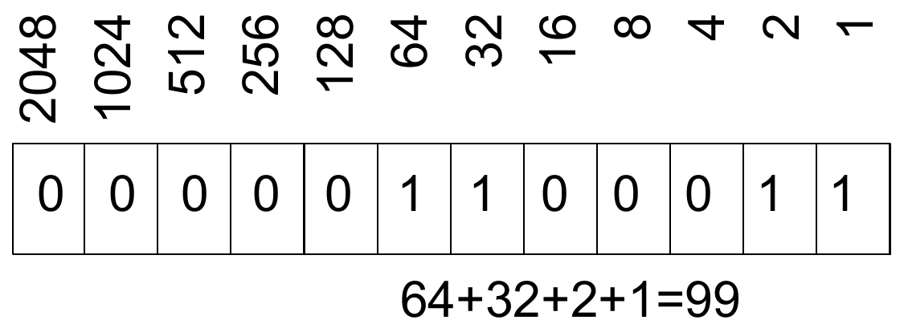

<!DOCTYPE HTML>
<html lang="de" class="light sidebar-visible" dir="ltr">
    <head>
        <!-- Book generated using mdBook -->
        <meta charset="UTF-8">
        <title>Einführung in Rust für Bioinformatiker</title>
        <meta name="robots" content="noindex">


        <!-- Custom HTML head -->

        <meta name="description" content="Eine Einführung in Rust mit einigen praktischen Beispielen.">
        <meta name="viewport" content="width=device-width, initial-scale=1">
        <meta name="theme-color" content="#ffffff">

        <link rel="icon" href="favicon.svg">
        <link rel="shortcut icon" href="favicon.png">
        <link rel="stylesheet" href="css/variables.css">
        <link rel="stylesheet" href="css/general.css">
        <link rel="stylesheet" href="css/chrome.css">
        <link rel="stylesheet" href="css/print.css" media="print">

        <!-- Fonts -->
        <link rel="stylesheet" href="FontAwesome/css/font-awesome.css">
        <link rel="stylesheet" href="fonts/fonts.css">

        <!-- Highlight.js Stylesheets -->
        <link rel="stylesheet" id="highlight-css" href="highlight.css">
        <link rel="stylesheet" id="tomorrow-night-css" href="tomorrow-night.css">
        <link rel="stylesheet" id="ayu-highlight-css" href="ayu-highlight.css">

        <!-- Custom theme stylesheets -->
        <link rel="stylesheet" href="theme/ferris.css">
        <link rel="stylesheet" href="theme/2018-edition.css">
        <link rel="stylesheet" href="theme/custom.css">

        <!-- MathJax -->
        <script async src="https://cdnjs.cloudflare.com/ajax/libs/mathjax/2.7.1/MathJax.js?config=TeX-AMS-MML_HTMLorMML"></script>

        <!-- Provide site root to javascript -->
        <script>
            var path_to_root = "";
            var default_theme = window.matchMedia("(prefers-color-scheme: dark)").matches ? "navy" : "light";
        </script>
        <!-- Start loading toc.js asap -->
        <script src="toc.js"></script>
    </head>
    <body>
    <div id="body-container">
        <!-- Work around some values being stored in localStorage wrapped in quotes -->
        <script>
            try {
                var theme = localStorage.getItem('mdbook-theme');
                var sidebar = localStorage.getItem('mdbook-sidebar');

                if (theme.startsWith('"') && theme.endsWith('"')) {
                    localStorage.setItem('mdbook-theme', theme.slice(1, theme.length - 1));
                }

                if (sidebar.startsWith('"') && sidebar.endsWith('"')) {
                    localStorage.setItem('mdbook-sidebar', sidebar.slice(1, sidebar.length - 1));
                }
            } catch (e) { }
        </script>

        <!-- Set the theme before any content is loaded, prevents flash -->
        <script>
            var theme;
            try { theme = localStorage.getItem('mdbook-theme'); } catch(e) { }
            if (theme === null || theme === undefined) { theme = default_theme; }
            const html = document.documentElement;
            html.classList.remove('light')
            html.classList.add(theme);
            html.classList.add("js");
        </script>

        <input type="checkbox" id="sidebar-toggle-anchor" class="hidden">

        <!-- Hide / unhide sidebar before it is displayed -->
        <script>
            var sidebar = null;
            var sidebar_toggle = document.getElementById("sidebar-toggle-anchor");
            if (document.body.clientWidth >= 1080) {
                try { sidebar = localStorage.getItem('mdbook-sidebar'); } catch(e) { }
                sidebar = sidebar || 'visible';
            } else {
                sidebar = 'hidden';
            }
            sidebar_toggle.checked = sidebar === 'visible';
            html.classList.remove('sidebar-visible');
            html.classList.add("sidebar-" + sidebar);
        </script>

        <nav id="sidebar" class="sidebar" aria-label="Table of contents">
            <!-- populated by js -->
            <mdbook-sidebar-scrollbox class="sidebar-scrollbox"></mdbook-sidebar-scrollbox>
            <noscript>
                <iframe class="sidebar-iframe-outer" src="toc.html"></iframe>
            </noscript>
            <div id="sidebar-resize-handle" class="sidebar-resize-handle">
                <div class="sidebar-resize-indicator"></div>
            </div>
        </nav>

        <div id="page-wrapper" class="page-wrapper">

            <div class="page">
                <div id="menu-bar-hover-placeholder"></div>
                <div id="menu-bar" class="menu-bar sticky">
                    <div class="left-buttons">
                        <label id="sidebar-toggle" class="icon-button" for="sidebar-toggle-anchor" title="Toggle Table of Contents" aria-label="Toggle Table of Contents" aria-controls="sidebar">
                            <i class="fa fa-bars"></i>
                        </label>
                        <button id="theme-toggle" class="icon-button" type="button" title="Change theme" aria-label="Change theme" aria-haspopup="true" aria-expanded="false" aria-controls="theme-list">
                            <i class="fa fa-paint-brush"></i>
                        </button>
                        <ul id="theme-list" class="theme-popup" aria-label="Themes" role="menu">
                            <li role="none"><button role="menuitem" class="theme" id="light">Light</button></li>
                            <li role="none"><button role="menuitem" class="theme" id="rust">Rust</button></li>
                            <li role="none"><button role="menuitem" class="theme" id="coal">Coal</button></li>
                            <li role="none"><button role="menuitem" class="theme" id="navy">Navy</button></li>
                            <li role="none"><button role="menuitem" class="theme" id="ayu">Ayu</button></li>
                        </ul>
                    </div>

                    <h1 class="menu-title">Einführung in Rust für Bioinformatiker</h1>

                    <div class="right-buttons">
                        <a href="print.html" title="Print this book" aria-label="Print this book">
                            <i id="print-button" class="fa fa-print"></i>
                        </a>
                        <a href="https://github.com/pnrobinson/rustbook-bioinf" title="Git repository" aria-label="Git repository">
                            <i id="git-repository-button" class="fa fa-github"></i>
                        </a>

                    </div>
                </div>


                <!-- Apply ARIA attributes after the sidebar and the sidebar toggle button are added to the DOM -->
                <script>
                    document.getElementById('sidebar-toggle').setAttribute('aria-expanded', sidebar === 'visible');
                    document.getElementById('sidebar').setAttribute('aria-hidden', sidebar !== 'visible');
                    Array.from(document.querySelectorAll('#sidebar a')).forEach(function(link) {
                        link.setAttribute('tabIndex', sidebar === 'visible' ? 0 : -1);
                    });
                </script>

                <div id="content" class="content">
                    <main>
                        <h1 id="einführung-in-rust-für-bioinformatiker"><a class="header" href="#einführung-in-rust-für-bioinformatiker">Einführung in Rust für Bioinformatiker</a></h1>
<p><em>von Peter N Robinson;</em></p>
<p>Mit Dank an die Autoren und Übersetzern des Rust-Books:
<a href="https://rust-lang-de.github.io/rustbook-de/">rustbook-de</a> &amp;
<a href="https://doc.rust-lang.org/stable/book/">rustbook-en</a>.</p>
<div style="break-before: page; page-break-before: always;"></div><h1 id="vorwort"><a class="header" href="#vorwort">Vorwort</a></h1>
<p>Dieses Buch dient zur Begleitung des Software-Praktikums (FU Berlin) der AG Robinson am Berlin Institute of Health (BIH).</p>
<div style="break-before: page; page-break-before: always;"></div><h1 id="einführung"><a class="header" href="#einführung">Einführung</a></h1>
<p>Wir werden git und github einsetzen, um die Grundlagen der Versionskontrolle zu erlernen.
Wir werden Code entwickeln, um mehrere Bioinformatik-Algorithmen zu implementieren. Aus didaktischen Gründen werden wir die Algorithmen von Grund auf implementieren, obwohl dies selten der Fall ist, was Sie im Produktionscode tun möchten.</p>
<p>Zeitplan (ungefähr)</p>
<ul>
<li>Woche 1: Hello world! (Grundlagen von rustc, cargo, git, github)</li>
<li>Woche 2: Datenstrukturen in Rust: traits</li>
<li>Woche 3: Algorithmen in Rust</li>
<li>Woche 4 - Woche 8: Programmierübungen
-- Arbeiten mit FASTQ Dateien in Rust
-- Arbeiten mit BAM Dateien in Rust
-- ggf. andere Themen</li>
</ul>
<div style="break-before: page; page-break-before: always;"></div><h1 id="vs-code"><a class="header" href="#vs-code">VS Code</a></h1>
<p>Wir werden in diesem Praktikum VS Code verwenden.</p>
<ol>
<li><a href="https://code.visualstudio.com/">Herunterladen und installieren</a></li>
<li>Walkthroughs (Einführungen): get started with VS Code
<ul>
<li>Copilot</li>
<li>Choose theme (dunkel/hell/Kontrast)</li>
<li>Support for languages, browse language extensions, suche nach "Rust", folgende Erweiterungspakete auswählen: rust, rust-analyzer, Rust Extension Pack, Rust Doc Viewer</li>
</ul>
</li>
<li>Den Plugin CodeLLDB installieren (debuggen)</li>
</ol>
<div style="break-before: page; page-break-before: always;"></div><h1 id="installation"><a class="header" href="#installation">Installation</a></h1>
<div style="break-before: page; page-break-before: always;"></div><h1 id="vs-code-extensions"><a class="header" href="#vs-code-extensions">VS Code Extensions</a></h1>
<p>VS Code lässt sich über Erweiterungen (extensions) für eine ganze Reihe von Programmiersprachen anpassen und erweitern.</p>
<p>In den Einstellungen (Settings), das Extensions-Fenster öffnen und folgende extensions installieren:</p>
<ul>
<li>rust</li>
<li>Rust Syntax</li>
<li>Rust Doc Viewer</li>
<li>rust-analyzer</li>
<li>Rust Extension Pack</li>
<li>CodeLLDB</li>
</ul>
<div style="break-before: page; page-break-before: always;"></div><h1 id="erste-schritte"><a class="header" href="#erste-schritte">Erste Schritte</a></h1>
<h2 id="grundlagen-von-rust"><a class="header" href="#grundlagen-von-rust">Grundlagen von Rust</a></h2>
<div class="emphasis-box">
<strong>Ziel der ersten Woche</strong>: Prakltikumsteilnehmer sollen ein grundlegendes Verständnis von Rust entwickeln, indem sie die ersten Kapitel des Rust-Buches durcharbeiten: [Rust book](https://doc.rust-lang.org/book/). Übersetzungen des Buches in verschiedene Sprache sind verfügbar (z.B., [Deutsch](https://rust-lang-de.github.io/rustbook-de/)).
<p>Es lohnt sich, das ganze Buch zu lesen und alle Übungen auszuführen. Wir werden im Praktikum einige der weichtigsten Themen gemeinsam besprechen.</p>
</div>
<div style="break-before: page; page-break-before: always;"></div><h1 id="hallo-welt"><a class="header" href="#hallo-welt">Hallo Welt</a></h1>
<h3 id="cargo"><a class="header" href="#cargo">cargo</a></h3>
<p>Cargo ist der Rust-Paketmanager. Cargo lädt die Abhängigkeiten Ihres Rust-Pakets herunter, kompiliert Ihre Pakete, erstellt verteilbare Pakete und lädt sie auf crates.io, die Paketregistrierung der Rust-Community, hoch.</p>
<pre><code class="language-shell">cargo
</code></pre>
<h3 id="hallo-welt-1"><a class="header" href="#hallo-welt-1">Hallo, Welt!</a></h3>
<p>Was sonst, natürlich beginnen wir mit einem Hallo-Welt-Programm!</p>
<pre><code class="language-console">cargo new hello
cd hello
cargo run
</code></pre>
<p>Lies hierzu das entsprechende <a href="https://rust-lang-de.github.io/rustbook-de/ch01-02-hello-world.html">Kapitel</a> des Rustbuchs. Bite auch das Kapitel zum cargo-Paketmanager lesen.</p>
<div style="break-before: page; page-break-before: always;"></div><h1 id="klassen"><a class="header" href="#klassen">Klassen..?</a></h1>
<p>In objektorientierten Programmiersprachen (z.B., Java, C++, auch Python) bezeichnet der Begriff "Klasse" eine benutzerdefinierte Datentypstruktur, die verwendet wird, um:</p>
<ul>
<li>Daten (Attribute, Eigenschaften oder Felder) zu gruppieren.</li>
<li>Funktionen (Methoden) bereitzustellen, die auf diese Daten zugreifen oder sie manipulieren können.
Die Vererbung ist ein Mechanismus, durch den eine abgeleitete Klasse die Eigenschaften und Methoden einer anderen Klasse (der Oberklasse oder Basisklasse) übernimmt. Ein Objekt ist dann eine Instanz einer Klasse, die die in der Klasse definierten Attribute und Methoden besitzt.</li>
</ul>
<p>Rust ist keine OOP und hat <em>keine</em> Klassen. Stattdessen sind Strukturen und Aufzählungen (enums) die Bausteine zum Erstellen neuer Typen in der Domäne eines Rust-Programms.</p>
<h1 id="strukturen-struct"><a class="header" href="#strukturen-struct">Strukturen (struct)</a></h1>
<p>Eine Struktur (struct) ist ein benutzerdefinierter Datentyp, mit dem man mehrere zusammenhängende Werte, die eine sinnvolle Gruppe bilden, zusammenpacken und benennen kann.</p>
<p>Hier ist ein aus der Luft gegriffenes Beispiel:</p>
<pre><pre class="playground"><code class="language-rust"><span class="boring">#![allow(unused)]
</span><span class="boring">fn main() {
</span>use std::collections::HashMap;

#[derive(Debug)]
struct DnaSequence {
    id: String,               
    sequence: String,         
    quality_scores: Vec&lt;u8&gt;,   
    annotations: HashMap&lt;String, String&gt;, 
    reference_position: Option&lt;u32&gt;,  
}

impl DnaSequence {
    /// Methoden -- mehr dazu später
}
<span class="boring">}</span></code></pre></pre>
<h3 id="weitere-informationen"><a class="header" href="#weitere-informationen">Weitere Informationen:</a></h3>
<ul>
<li><a href="https://rust-lang-de.github.io/rustbook-de/ch05-00-structs.html">structs</a></li>
</ul>
<div style="break-before: page; page-break-before: always;"></div><h1 id="enums"><a class="header" href="#enums">enums..?</a></h1>
<p>Aufzählungen (Enumerationen, kurz, <em>enums</em>erlauben es, einen Typ durch Aufzählung seiner möglichen Varianten (variants) zu definieren. In Python und vielen anderen Programmiersprachen sehen enums ungefähr wie folgt aus:</p>
<pre><code class="language-python">from enum import Enum
class Color(Enum):
    RED = 1
    GREEN = 2     
    BLUE = 3
</code></pre>
<p>Das heißt, ein enum in Python ist ein Datentyp, der verwendet wird, um eine Menge von benannten Konstanten zu definieren. Diese Konstanten sind typischerweise zusammengehörige Werte, die unveränderlich sind.</p>
<p>In Rust kann man enums analog definieren, z.B.,</p>
<pre><pre class="playground"><code class="language-rust"><span class="boring">#![allow(unused)]
</span><span class="boring">fn main() {
</span>enum Color {
    RED,
    GREEN,
    BLUE,
}

Color::RED;
<span class="boring">}</span></code></pre></pre>
<p>In Rust können enums darüber hinaus mit ggf. unterschiedlichen Datentypen ausgestattet und für Pattern Matching verwendet werden.</p>
<p>S. das <a href="https://rust-lang-de.github.io/rustbook-de/ch06-00-enums.html">enum-Kapitel</a> im Rust-Buch.</p>
<p>Es folgt ein kurzes Beispiel.</p>
<pre><code>enum HttpResponse {
    Ok(String),                     // Variant with associated data (e.g., response body)
    NotFound,                       // Unit variant (no data)
    Redirect { url: String },       // Struct-like variant with named fields
    ServerError(u16, String),       // Tuple-like variant with multiple data types
}

fn handle_response(response: HttpResponse) {
    match response {
        HttpResponse::Ok(body) =&gt; {
            println!("Success: {}", body);
        }
        HttpResponse::NotFound =&gt; {
            println!("Error: Resource not found.");
        }
        HttpResponse::Redirect { url } =&gt; {
            println!("Redirecting to: {}", url);
        }
        HttpResponse::ServerError(code, message) =&gt; {
            println!("Server error {}: {}", code, message);
        }
    }
}

fn main() {
    // Example usage
    let response1 = HttpResponse::Ok("Welcome!".to_string());
    let response2 = HttpResponse::NotFound;
    let response3 = HttpResponse::Redirect { url: "https://example.com".to_string() };
    let response4 = HttpResponse::ServerError(500, "Internal Server Error".to_string());

    handle_response(response1);
    handle_response(response2);
    handle_response(response3);
    handle_response(response4);
}
```
</code></pre>
<div style="break-before: page; page-break-before: always;"></div><h1 id="optional"><a class="header" href="#optional">Optional..?</a></h1>
<p>In C wird oft der Wert NULL verwendet, um anzuzeigen, dass ein Zeiger keinen gültigen Wert enthält,</p>
<p>Das Problem mit Nullwerten besteht darin, dass du einen Fehler erhältst, wenn du versuchst, einen Nullwert als Nicht-Nullwert zu verwenden.</p>
<p>Aus diesem Grunde haben viele neuere Programmiersprachen wie
Python und Java "Optional"-Datentypen.</p>
<p>Optional[int] bedeutet, dass die Funktion entweder einen int oder None zurückgeben kann.</p>
<pre><code class="language-C">#include &lt;stdio.h&gt;
#include &lt;stdlib.h&gt;
#include &lt;string.h&gt;

// Funktion, die eine Zeichenkette zurückgibt oder NULL, wenn der Schlüssel nicht gefunden wird
const char* find_value(const char* key) {
    if (strcmp(key, "a") == 0) {
        return "Wert A";
    } else if (strcmp(key, "b") == 0) {
        return "Wert B";
    }
    return NULL;  // Kein Wert gefunden
}

int main() {
    const char* result;

    result = find_value("a");  // Schlüssel gefunden
    if (result != NULL) {
        printf("Gefundener Wert: %s\n", result);
    } else {
        printf("Kein Wert gefunden\n");
    }

    result = find_value("c");  // Schlüssel nicht gefunden
    if (result != NULL) {
        printf("Gefundener Wert: %s\n", result);
    } else {
        printf("Kein Wert gefunden\n");
    }

    return 0;
}
</code></pre>
<p>In Java gibt es deshalb die Klasse Optional, die   verwendet wird, um anzuzeigen, dass ein Wert entweder vorhanden ist oder fehlt.</p>
<pre><code class="language-java">import java.util.Optional;

public class Main {
    public static void main(String[] args) {
        // Ein Optional mit einem Wert
        Optional&lt;String&gt; someValue = findValue("a");
        someValue.ifPresentOrElse(
            value -&gt; System.out.println("Gefundener Wert: " + value),
            () -&gt; System.out.println("Kein Wert gefunden")
        );

        // Ein Optional ohne Wert
        Optional&lt;String&gt; noValue = findValue("c");
        noValue.ifPresentOrElse(
            value -&gt; System.out.println("Gefundener Wert: " + value),
            () -&gt; System.out.println("Kein Wert gefunden")
        );
    }

    public static Optional&lt;String&gt; findValue(String key) {
        if ("a".equals(key)) {
            return Optional.of("Wert A");
        } else if ("b".equals(key)) {
            return Optional.of("Wert B");
        }
        return Optional.empty(); // Kein Wert gefunden
    }
}
</code></pre>
<p>In Rust gibt es die Aufzählung "Option<T>":</p>
<pre><pre class="playground"><code class="language-rust"><span class="boring">#![allow(unused)]
</span><span class="boring">fn main() {
</span>enum Option&lt;T&gt; {
    None,
    Some(T),
}
<span class="boring">}</span></code></pre></pre>
<p>Sie wird wie folgt verwendet.</p>
<pre><pre class="playground"><code class="language-rust">fn find_value(key: &amp;str) -&gt; Option&lt;&amp;str&gt; {
    match key {
        "a" =&gt; Some("Wert A"),
        "b" =&gt; Some("Wert B"),
        _ =&gt; None,
    }
}

fn main() {
    if let Some(value) = find_value("a") {
        println!("Gefundener Wert: {}", value);
    } else {
        println!("Kein Wert gefunden");
    }
}</code></pre></pre>
<p>Option ist ein zentrales und unverzichtbares Konstrukt in Rust, das nicht nur für Sicherheit und Klarheit sorgt, sondern auch das Risiko von Fehlern durch null-Referenzen vollständig eliminiert. Das Enum Option in Rust repräsentiert einen Wert, der entweder vorhanden ist (Some(T)) oder fehlt (None). Es wird häufig verwendet, um Werte oder Operationen sicher zu behandeln, die möglicherweise keinen Wert zurückgeben.</p>
<p>S. " Aufzählung Option und ihre Vorteile gegenüber Nullwerten" in dem <a href="https://rust-lang-de.github.io/rustbook-de/ch06-01-defining-an-enum.html">enum Kapitel</a> des Rust-Buchs.</p>
<div style="break-before: page; page-break-before: always;"></div><h1 id="das-kontrollflusskonstrukt-match"><a class="header" href="#das-kontrollflusskonstrukt-match">Das Kontrollflusskonstrukt match</a></h1>
<p>Das Kontrollflusskonstrukt namens "match" ist verglichen mit "if/else" und "switch" bei den meisten anderen Programmiersprachen extrem leistungsfähig und flexibel. Um in Rust zu programmieren ist ein gutes Verständnis von "match" unverzichtbar.</p>
<p>Es folgt ein gekünsteltes Beispiel, wobei nach Übereinstimmung mit drei Elementen geprüft wird (Einzelheiten werden während des Prkatikums besprochen!).</p>
<pre><pre class="playground"><code class="language-rust"><span class="boring">#![allow(unused)]
</span><span class="boring">fn main() {
</span>impl DnaSequence {
    /// Analysiert die Sequenz und liefert eine Beschreibung basierend auf verschiedenen Kriterien.
    fn analyze(&amp;self) -&gt; String {
        match (self.sequence.len(), self.reference_position, self.annotations.get("Gene")) {
            (0, _, _) =&gt; "Die Sequenz ist leer.".to_string(),
            (1..=50, Some(pos), Some(gene)) =&gt; format!(
                "Kurze Sequenz, referenziert an Position {} und gehört zu Gen {}.",
                pos, gene
            ),
            (1..=50, Some(pos), None) =&gt; format!(
                "Kurze Sequenz, referenziert an Position {}, aber kein Gen zugeordnet.",
                pos
            ),
            (51.., _, Some(gene)) =&gt; format!("Lange Sequenz, zugeordnet zu Gen {}.", gene),
            (51.., _, None) =&gt; "Lange Sequenz ohne Gen-Annotation.".to_string(),
            _ =&gt; "Sequenz konnte nicht analysiert werden.".to_string(),
        }
    }
}

<span class="boring">}</span></code></pre></pre>
<p>s. das <a href="https://rust-lang-de.github.io/rustbook-de/ch06-02-match.html">match-Kapitel</a> im Rust-Buch.</p>
<div style="break-before: page; page-break-before: always;"></div><h1 id="exceptions-"><a class="header" href="#exceptions-">Exceptions... ?</a></h1>
<p>Guter Code muss immer mit dem DAU rechnen (Dem dümmsten anzunehmenden User)... Außerdem können unerwartete Dinge passieren, wie z.B. der Absturz einer API, auf die unser Code angwiesen ist.</p>
<p>Viele Sprachen (z.B. Pyhton, Java) behandeln solche Ausnahmen (Exceptions) mit einer try/catch-Struktur.</p>
<pre><code class="language-java">public static int divide(int a, int b){
    int c = 0;
    try {
        c = a/b; 
    } catch(ArithmeticException e){
        System.out.printf("Fehler: {e.getMessage}", e);
    }
    return c;
}
</code></pre>
<p>oder (besser)</p>
<pre><code class="language-java">public static int divide(int a, int b) throws ArithmeticException {
    if (b==0) {
        throw new ArithmeticException("Attempt to divide by zero!");
    }
    return a/c;
}
</code></pre>
<p>In Rust gibt es dagegen keine herkömmlichen Exceptions. Stattdessen verfolgt Rust einen Ansatz, der auf Ergebnis-Typen und Panics basiert, um Fehler zu
handhaben.</p>
<h2 id="result"><a class="header" href="#result">Result</a></h2>
<p><code>Result&lt;T, E&gt;</code> ist der Typ, der zum Zurückgeben und Weitergeben
von Fehlern verwendet wird. Es handelt sich um eine Aufzählung mit
den Varianten <code>Ok(T)</code>, die für Erfolg steht und einen Wert enthält, und  <code>Err(E)</code>, die für Fehler steht und einen Fehlerwert enthält.</p>
<pre><pre class="playground"><code class="language-rust">fn divide(a: f64, b: f64) -&gt; Result&lt;f64, String&gt; {
    if b == 0.0 {
        Err(String::from("Division durch Null ist nicht erlaubt"))
    } else {
        Ok(a / b)
    }
}

fn main() {
    let numerator = 10.0;
    let denominator = 0.0;

    match divide(numerator, denominator) {
        Ok(result) =&gt; println!("Ergebnis: {}", result),
        Err(e) =&gt; eprintln!("Fehler: {}", e),
    }
}</code></pre></pre>
<h3 id="warum-rust-keine-ausnahmen-verwendet"><a class="header" href="#warum-rust-keine-ausnahmen-verwendet">Warum Rust keine Ausnahmen verwendet</a></h3>
<ol>
<li>Keine versteckten Kontrollflüsse: Fehlerbehandlung ist explizit.</li>
<li>Kostenkontrolle: Keine zusätzlichen Laufzeitkosten durch Exception-Handling.</li>
<li>Sicherheit: Rust fördert die Verwendung von Result oder Option, was den Umgang mit Fehlern zwingend macht.</li>
</ol>
<h3 id="panic-vs-result"><a class="header" href="#panic-vs-result">Panic vs Result</a></h3>
<p>Für schwerwiegende Fehler, die nicht erwartet oder behandelt werden sollen, bietet Rust das Konzept eines Panic. Ein Panic bedeutet, dass das Programm nicht fortgesetzt werden kann, und wird typischerweise verwendet, wenn ein logischer Fehler vorliegt, z. B. ein Index außerhalb der Grenzen eines Arrays.</p>
<pre><pre class="playground"><code class="language-rust">fn main() {
    let v = vec![1, 2, 3];
    println!("{}", v[10]); // löst panic aus - beendet das Programm
}</code></pre></pre>
<p>Vgl. den Abschnitt <a href="https://doc.rust-lang.org/std/macro.panic.html">When to use panic! vs Result
</a>.</p>
<h3 id="unwrap"><a class="header" href="#unwrap">unwrap</a></h3>
<p><code>unwrap</code> wird verwendet, um den enthaltenen Wert eines Option oder Result zu extrahieren. Wenn der Wert nicht existiert (None für Option oder Err für Result), führt unwrap zu einem panic!</p>
<pre><pre class="playground"><code class="language-rust">fn main() {
    let some_value = Some(42);
    let none_value: Option&lt;i32&gt; = None;

    println!("{}", some_value.unwrap()); // Gibt 42 aus.

    // Führt zu einem panic!
    println!("{}", none_value.unwrap());
}</code></pre></pre>
<h2 id="expect"><a class="header" href="#expect">expect</a></h2>
<p><code>expect</code> ist wie <code>unwrap</code>, erlaubt aber, eine benutzerdefinierte Fehlermeldung anzugeben, wenn ein Fehlerzustand eintritt. Dies ist hilfreich für Debugging.</p>
<p>Im folgenden Beispiel führt das <code>expect</code> zu einem <code>panic!</panic> mit einer benutzerdefinierten Fehlermeldung.</p>
<pre><pre class="playground"><code class="language-rust">fn main() {
    let none_value: Option&lt;i32&gt; = None;

    println!("{}", none_value.expect("Option war None"));
}</code></pre></pre>
<h2 id="sicherere-alternativen-zu-unwrap"><a class="header" href="#sicherere-alternativen-zu-unwrap">Sicherere Alternativen zu unwrap</a></h2>
<h3 id="match"><a class="header" href="#match"><code>match</code>.</a></h3>
<p>Siehe hierzu <a href="ch01-06-match.html">Kapitel01-06</a>.</p>
<pre><pre class="playground"><code class="language-rust">fn main() {
    let some_value = Some(42);

    match some_value {
        Some(value) =&gt; println!("Wert: {}", value),
        None =&gt; println!("Kein Wert gefunden"),
    }
}</code></pre></pre>
<h3 id="unwrap_or"><a class="header" href="#unwrap_or">unwrap_or</a></h3>
<p>Falls ein Wert nicht existiert, liefert <code>unwrap_or</code> einen Standardwert zurück.</p>
<pre><pre class="playground"><code class="language-rust">fn main() {
    let none_value: Option&lt;i32&gt; = None;
    println!("{}", none_value.unwrap_or(0)); // Gibt 0 aus.
}</code></pre></pre>
<h3 id="unwrap_or_else"><a class="header" href="#unwrap_or_else">unwrap_or_else</a></h3>
<p>Führt eine Funktion aus, um einen Standardwert zu berechnen, wenn der Wert nicht existiert.</p>
<pre><pre class="playground"><code class="language-rust">fn main() {
    let none_value: Option&lt;i32&gt; = None;
    println!("{}", none_value.unwrap_or_else(|| 42)); // Gibt 42 aus.
}</code></pre></pre>
<h3 id="-operator"><a class="header" href="#-operator">?-Operator</a></h3>
<p>Der <code>?</code>-Operator kann in Funktionen verwendet werden, die einen Result zurückgeben. Er kann verwendet werden, um den Wert aus einem Result oder Option zu extrahieren, ohne jedes Mal explizit match schreiben zu müssen. Wenn ein Fehler auftritt, gibt der ?-Operator den Fehler direkt aus der umgebenden Funktion zurück.</p>
<pre><pre class="playground"><code class="language-rust">fn divide(a: f64, b: f64) -&gt; Result&lt;f64, String&gt; {
    if b == 0.0 {
        Err(String::from("Division durch Null"))
    } else {
        Ok(a / b)
    }
}

fn calculate() -&gt; Result&lt;(), String&gt; {
    let result = divide(10.0, 2.0)?; // Extrahiert den Wert oder gibt den Fehler (gleich) zurück.
    println!("Ergebnis: {}", result);
    Ok(()) // Rückgabe im Erfolgsfall
}

fn main() {
    match calculate() {
        Ok(()) =&gt; println!("Berechnung erfolgreich!"),
        Err(e) =&gt; println!("Fehler: {}", e),
    }
}</code></pre></pre>
<div style="break-before: page; page-break-before: always;"></div><h1 id="interfaces-schnittstellen"><a class="header" href="#interfaces-schnittstellen">Interfaces (Schnittstellen)...?</a></h1>
<p>In Sprachen wie Java  definiert eine Interface (Schnittstelle) die Signaturen von Methoden (ohne Implementierung), die von einer implementierenden Klasse bereitgestellt werden müssen.</p>
<pre><code class="language-java">public interface Animal {
    void makeSound();
}

public class Dog implements Animal {
    @Override
    public void makeSound() {
        System.out.println("Wuff!");
    }
}

public class Cat implements Animal {
    @Override
    public void makeSound() {
        System.out.println("Miau!");
    }
}

public class Main {
    public static void main(String[] args) {
        Animal dog = new Dog();
        Animal cat = new Cat();

        dog.makeSound(); // Ausgabe: Wuff!
        cat.makeSound(); // Ausgabe: Miau!
    }
}
</code></pre>
<p>In Python gibt es keine Schnittstellen im engeren Sinne, jedoch kann man mit verschiedenen Konstrukten Ähntliches implementieren (vgl <a href="https://realpython.com/duck-typing-python/">Duck typing</a>).</p>
<h1 id="traits"><a class="header" href="#traits">Traits</a></h1>
<p>In Rust haben Traits in etwa den Stellenwert von Interfaces, jedoch werden sie anders implementiert.</p>
<p>Man kann bestehende Traits für eigene Datentypen implementieren oder aber neue Traits definieren. Hier wollen wir den Trait <code>FromString</code> aus der Standardbibliothek für eine eigene Struktur implementieren.</p>
<p>Der Trait <a href="https://doc.rust-lang.org/std/str/trait.FromStr.html">FromString</a> ist von der Standardbibliothek.</p>
<pre><pre class="playground"><code class="language-rust"><span class="boring">#![allow(unused)]
</span><span class="boring">fn main() {
</span>pub trait FromStr: Sized {
    type Err;
    fn from_str(s: &amp;str) -&gt; Result&lt;Self, Self::Err&gt;;
}
<span class="boring">}</span></code></pre></pre>
<p>Die parse-Method erwartet nur, dass ein Datentyp diesen Trait implementiert.</p>
<pre><pre class="playground"><code class="language-rust"><span class="boring">#![allow(unused)]
</span><span class="boring">fn main() {
</span>pub fn parse&lt;F: FromStr&gt;(&amp;self) -&gt; Result&lt;F, F::Err&gt; {
    FromStr::from_str(self)
}
<span class="boring">}</span></code></pre></pre>
<p>Stellen wir uns folgende Struktur vor</p>
<pre><pre class="playground"><code class="language-rust"><span class="boring">#![allow(unused)]
</span><span class="boring">fn main() {
</span>struct DnaString {
    dna: String;
}
<span class="boring">}</span></code></pre></pre>
<p>Um unsere Struktur mit <code>parse</code> verwenden zu können, müssen wir <code>FromStr</code>   implementieren. Unser Code überprüft, ob alle Zeichen in dem zu parsenden String A, C, G, order T sind.</p>
<pre><pre class="playground"><code class="language-rust"><span class="boring">#![allow(unused)]
</span><span class="boring">fn main() {
</span>use std::str::FromStr;

struct DnaString {
    pub dna: String,
}

#[derive(Debug)]
struct DnaParseError;

impl FromStr for DnaString {
    type Err = DnaParseError;

    fn from_str(s: &amp;str) -&gt; Result&lt;DnaString, DnaParseError&gt; {
        if s.chars().all(|c| matches!(c, 'A' | 'C' | 'G' | 'T')) {
            Ok(DnaString { dna: s.to_string()})
        } else {
            Err(DnaParseError)
        } 
    }
}

#[cfg(test)]
mod test {
    use super::DnaString;

    #[test]
    fn test_dna_parse() {
        let valid_dna = "ATGCTCGCTAG";
        let dna_struct = valid_dna.parse::&lt;DnaString&gt;();
        assert!(dna_struct.is_ok());
        let dna_struct = dna_struct.expect("Could not unwrap DNA");
        assert_eq!(valid_dna, dna_struct.dna);
    }

    #[test]
    fn test_invalid_dna_parse() {
        let valid_dna = "ATGCT??CGCTAG";
        let dna_struct = valid_dna.parse::&lt;DnaString&gt;();
        assert!(dna_struct.is_err());
    }
}
<span class="boring">}</span></code></pre></pre>
<h1 id="Übung-1"><a class="header" href="#Übung-1">Übung 1</a></h1>
<p>Der folgende Code kompiliert nicht</p>
<pre><pre class="playground"><code class="language-rust"><span class="boring">#![allow(unused)]
</span><span class="boring">fn main() {
</span>let d = DnaString { dna: "TGCAACGT".to_string()};
writeln!("{}", d);
<span class="boring">}</span></code></pre></pre>
<p>Verwenden Sie die Fehlermeldung des Rustkompilierers um herauszufinden, warum
der Code nicht funktioniert. Es gibt mindests zwei Korrekturen - finden Sie sie
und schreiben Sie entsprechenden Rustcode.</p>
<div style="break-before: page; page-break-before: always;"></div><h1 id="sortieralgorithmen"><a class="header" href="#sortieralgorithmen">Sortieralgorithmen</a></h1>
<p>Wir werden als Übung mehrere Sortieralgorithmen in Rust implementieren. Sinn und Zweck der Überung ist nicht unbedingt, Sortieralgorithmen zu erlernen, sondern zu lernen, wie man mit Traits in Rust umgeht und wie der Debugger eingesetzt werden kann.</p>
<p>Bevor wir mit diesem Abschnitt beginnen, muss der Debugger (CodeLLDB) als VS Code extension installiert sein, s. dazu <a href="ch00-03-extensions.html">Extensions</a>.</p>
<div style="break-before: page; page-break-before: always;"></div><h1 id="bubblesort"><a class="header" href="#bubblesort">Bubblesort</a></h1>
<p>Bubblesort ist ein einfacher Sortieralgorithmus, der Elemente in einer Liste durch wiederholtes Vergleichen benachbarter Elemente sortiert. Dabei werden zwei benachbarte Elemente vertauscht, wenn sie in der falschen Reihenfolge stehen. Der Algorithmus wird so lange wiederholt, bis die Liste vollständig sortiert ist. Der Name "Bubblesort" kommt daher, dass kleinere Elemente in der Liste "nach oben steigen", ähnlich wie Luftblasen (bubbles) im Wasser.</p>
<h2 id="algorithmus"><a class="header" href="#algorithmus">Algorithmus</a></h2>
<ol>
<li>Starte am Anfang der Liste.</li>
<li>Vergleiche Element <em>i</em> (e<sub>i</sub>) mit Element <em>i+1</em> (e<sub>i+1</sub>)</li>
<li>Wenn e<sub>i</sub> größer als e<sub>i+1</sub>  ist, vertausche sie. Andernfalls lasse sie unverändert.</li>
<li>Gehe so durch die gesamte Liste.</li>
<li>Wiederhole den Vorgang für die gesamte Liste, bis keine Vertauschungen mehr notwendig sind (die Liste ist dann sortiert).</li>
</ol>
<p>Dieser Algorithmus hat eine Zeitkomplexität von O(n<sup>2</sup>).</p>
<pre><pre class="playground"><code class="language-rust"><span class="boring">#![allow(unused)]
</span><span class="boring">fn main() {
</span>pub fn bubble_sort&lt;T: PartialOrd&gt;(v: &amp;mut [T]) {
    for i in 0..v.len() {
        let mut sorted = true;
        for j in 0..(v.len()-1) - i {
            if v[i] &gt; v[i+1] {
                v.swap(i, i+1);
                sorted = false;
            }
        }
        if sorted {
            return;
        }
    }
}

#[cfg(test)]
mod tests {
    use super::*;

    #[test]
    fn test_bubble_sort() {
        let mut v = vec![4, 6, 77, 1, 13, 24];
        bubble_sort(&amp;mut v);
        assert_eq!(v, vec![1, 4, 6, 13, 24, 77]);
    }
}
<span class="boring">}</span></code></pre></pre>
<h2 id="Übungen"><a class="header" href="#Übungen">Übungen</a></h2>
<p>Erzeuge eine Rust-Applikation namens ch2 mit cargo.</p>
<ol>
<li>Führe den oben stehenden Rustcode aus.</li>
<li>Definiere einen struct-Datentype mit zwei Ganzzahl-Feldern. Konsulitere die Dokumentation für den PartialOrd-Trait (https://doc.rust-lang.org/std/cmp/trait.PartialOrd.html). Implementiere den Trait für die Struktur, so dass structs gemäß der Summe beider Felder sortiert werden. Sortiere drei Beispiel structs.</li>
<li>Schreibe einen Test der bubble-Sort-Methode für Vektoren von Ganzzahlen</li>
<li>Schreibe einen Test für die oben definierte Struktur</li>
<li>Schreibe eine Testmethode, welche mehrere Tests auf einmal durchführt.</li>
</ol>
<div style="break-before: page; page-break-before: always;"></div><h1 id="quicksort"><a class="header" href="#quicksort">Quicksort</a></h1>
<div class="emphasis-box">
    <strong>Ziele:</strong>
    <ol>
    <li>Slices verstehen</li>
    <li>quicksort-Algorithmus in idiomatischem Rust programmieren</li>
    <li>lldb Debugger verstehen</li>
    </ol>
</div>
<ul>
<li>Texte teilweise von <a href="https://de.wikipedia.org/wiki/Quicksort">Wikipedia</a> angepasst.</li>
<li>Einführung auf <a href="https://www.youtube.com/watch?v=h8eyY7dIiN4&amp;ab_channel=CodingwithJohn">YouTube</a>.</li>
</ul>
<p>Quicksort ist ein schneller, rekursiver Sortieralgorithmus, der nach dem Prinzip <em>Teile und herrsche</em> arbeitet. Im Durchschnitt führt der Quicksort-Algorithmus \(O(n\cdot log(n))\) Vergleiche durch.</p>
<p>Zunächst wird die zu sortierende Liste in zwei Teillisten („linke“ und „rechte“ Teilliste) getrennt. Dazu wählt Quicksort ein sogenanntes Pivotelement aus der Liste aus. Alle Elemente, die kleiner als das Pivotelement sind, kommen in die linke Teilliste, und alle, die größer sind, in die rechte Teilliste. Die Elemente, die gleich dem Pivotelement sind, können sich beliebig auf die Teillisten verteilen. Nach der Aufteilung sind die Elemente der linken Liste kleiner oder gleich den Elementen der rechten Liste.</p>
<p>Anschließend muss man also noch jede Teilliste in sich sortieren, um die Sortierung zu vollenden. Dazu wird der Quicksort-Algorithmus jeweils auf der linken und auf der rechten Teilliste ausgeführt. Jede Teilliste wird dann wieder in zwei Teillisten aufgeteilt und auf diese jeweils wieder der Quicksort-Algorithmus angewandt, und so weiter. Diese Selbstaufrufe werden als Rekursion bezeichnet. Wenn eine Teilliste der Länge eins oder null auftritt, so ist diese bereits sortiert und es erfolgt der Abbruch der Rekursion.</p>
<p>Wir haben hier den Java-Code vom oben genannten YouTube-Video leicht angepasst bzw. kommentiert wiedergegeben. Sie können optional das Programm laufen lassen, indem Sie den Code in eine Datei namens Quick.java kopieren und diese Datei mit <code>$ javac Quick.java</code>kompliieren und das Ergebnis mit <code>$ java Quick</code>ausführen.</p>
<pre><code class="language-java">import java.util.Random;

public class Quicksort {

  public static void main(String[] args) {
    int[] numbers = [4, 6, 1, 8, 13, 33, 2];
    printArray(numbers);
    quicksort(numbers);
    printArray(numbers);
  }

  private static void quicksort(int[] array, int lowIndex, int highIndex) {
    // 1. Basisfall der Rekursion: jedes Feld mit nur einem Element ist schon sortiert!
    if (lowIndex &gt;= highIndex) {
      return;
    }
    // 2. Das letzte ElementWir dient als Pivotelement
    int pivot = array[highIndex];
    // 3. Die zu sortierende Liste in zwei Teillisten wird in zwei Unterlisten getrennt.
    // Alle Elemente, die kleiner als das Pivotelement sind, kommen in die linke Teilliste, 
    // und alle, die größer sind, in die rechte Teilliste.
    // Nach Ausruf von 'partition' ist die Position des Pivotelements korrekt, aber die
    // linke und rechte Unterlisten sind nicht unbedingt richtig sortiert
    int leftPointer = partition(array, lowIndex, highIndex, pivot);
    // 4. Sortierte die linke Unterliste (rekursiv)
    quicksort(array, lowIndex, leftPointer - 1);
    // 5. Sortierte die rechte Unterliste (rekursiv)
    quicksort(array, leftPointer + 1, highIndex);

  }

  private static int partition(int[] array, int lowIndex, int highIndex, int pivot) {
    int leftPointer = lowIndex;
    int rightPointer = highIndex - 1;

    while (leftPointer &lt; rightPointer) {
        // 1. Von links gehen, bis eine Zahl gefunden wird, die größer als der Pivot ist, 
        // oder der linke Zeiger mit dem rechten identisch ist
        while (array[leftPointer] &lt;= pivot &amp;&amp; leftPointer &lt; rightPointer) {
            leftPointer++;
        }
        // 2. Von rechts gehen, bis eine Zahl gefunden wird, die kleiner als der Pivot ist, 
        // oder der rechte Zeiger mit dem linken identisch ist.
        while (array[rightPointer] &gt;= pivot &amp;&amp; leftPointer &lt; rightPointer) {
        rightPointer--;
        }
        //  3. Die Werte vertauschen, auf die der linke und der rechte Zeiger zeigen
        swap(array, leftPointer, rightPointer);
    }
    // 4. An dieser Stelle muss das Pivotelement mit dem Wert am linken Zeiger vertauscht werden
    // (highIndex ist der Index des Pivotelements)
    if(array[leftPointer] &gt; array[highIndex]) {
      swap(array, leftPointer, highIndex);
    }
    else {
      leftPointer = highIndex;
    }
    
    return leftPointer;
  }

  private static void swap(int[] array, int index1, int index2) {
    int temp = array[index1];
    array[index1] = array[index2];
    array[index2] = temp;
  }

  private static void printArray(int[] numbers) {
    for (int i = 0; i &lt; numbers.length; i++) {
      System.out.println(numbers[i]);
    }
  }
}
</code></pre>
<div style="break-before: page; page-break-before: always;"></div><h1 id="fastq"><a class="header" href="#fastq">FASTQ</a></h1>
<div class="emphasis-box">
    <strong>Ziele:</strong>
    <ol>
    <li>FASTQ verstehen</li>
    <li>Einfache Qualitätsbewertungsroutined in idiomatischem Rust programmieren.</li>
    <li>Grundlagen von GitHub vestehen und anwenden.</li>
    </ol>
    Wir beginnen mit einer Einführung in das FASTQ-Format. Falls das Format schon bekannt ist, kann die Einführung übersprungen werden.
</div>
<p>FASTQ ist ein Dateiformat für den Austausch von Sequenzierungsdaten, das sowohl die Sequenz als auch eine entsprechende Bewertung der Basenqualität enthält.<sup class="footnote-reference"><a href="#note">1</a></sup> Sein Name leitet sich vom ehrwürdigen FASTA-Format ab, einem textbasierten Format zur Darstellung von DNA- und Aminosäuresequenzen, das ursprünglich 1985 zusammen mit einem Softwarepaket für das Alignment von Nukleinsäuren und Proteinen veröffentlicht wurde <a href="https://pubmed.ncbi.nlm.nih.gov/2983426/">Lipman et al. 1985</a>. Das FASTA-Format ist eines der in der Bioinformatik am weitesten verbreiteten Formate überhaupt. Die erste Zeile beginnt mit einem <code>&gt;</code> (Größer-als)-Symbol, direkt gefolgt von einem Namen oder einem eindeutigen Sequenzbezeichner, optional gefolgt von einer Beschreibung der Sequenz. Die folgenden Zeilen enthalten die Sequenz (in der Regel mit 70 oder 80 Zeichen pro Zeile). Eine Datei kann mehrere Sequenzeinträge enthalten, aber jeder muss mit einer <code>&gt;</code>-Zeile beginnen. Die FASTA-Datei für die Homo sapiens Fibrillin 1 (\textit{FBN1}) messenger RNA beginnt zum Beispiel so</p>
<pre>
>NM_000138.4 Homo sapiens fibrillin 1 (FBN1), mRNA
AGTATTTCTCTCGCGAGAAACCGCTGCGCGGACGATACTTGAAGAGGTGGGGAAAGGAGGGGGCTGCGGG
AGCCGCGGCAGAGACTGTGGGTGCCACAAGCGGACAGGAGCCACAGCTGGGACAGCTGCGAGCGGAGCCG
AGCAGTGGCTGTAGCGGCCACGACTGGGAGCAGCCGCCGCCGCCTCCTCGGGAGTCGGAGCCGCCGCTTC
(weitere 165 Zeilen)
</pre>
<p>Das FASTQ-Format ist eine Erweiterung des FASTA-Formats, in dem zusätzlich ein numerischer Qualitätswert für jedes Nukleotid in einer Sequenz gespeichert wird. Jeder Read in der Datei
wird durch vier Zeilen mit den folgenden Informationen dargestellt (ohne Längenbegrenzung):</p>
<pre>
@SEQ_ID
GATTTGGGGTTCAAAGCAGTATCGATCAAATAGTAAATCCATTTGTTCAACTCACAGTTT
+
!''*((((***+))%%%++)(%%%%).1***-+*''))**55CCF>>>>>>CCCCCCC65 
</pre>
<figure>

 <figcaption>
	Bestandteile eines FASTQ-Files. 
  </figcaption>
</figure>
<p>Die  <code>@</code>-Zeile umfasst ein freies Formatfeld, das in erster Linie für den Titel oder die Kennung der gemeldeten Sequenz verwendet wird. Illumina hat eine typische Namenskonvention für die Titelzeile, die wir weiter unten erläutern werden. Die zweite Zeile enthält die aufgerufenen Basen, d. h. die Sequenz des Read. Es folgt die <code>+</code>-Zeile Obwohl frühe Versionen des FASTQ-Formats in dieser Zeile eine Wiederholung der Titelzeile enthielten, ist es inzwischen Standard, dass die Zeile nur das Pluszeichen (<code>+</code>) enthält, was die Dateigröße erheblich reduziert. Die vierte Zeile schließlich enthält die ASCII-kodierten Phred-Qualitätsbewertungen und muss die gleiche Länge wie die Sequenzzeile haben. Somit wird für jede der in der zweiten Zeile angegebenen Basen eine Qualitätsbewertung in der entsprechenden Position der vierten Zeile angegeben.  In einigen früheren Versionen von FASTQ wurden verschiedene Schemata für die Kodierung von Qualitätswerten verwendet, aber die Gemeinschaft hat sich auf das Format Sanger/Illumina 1.8+ (Phred+33) geeinigt, das hier beschrieben wird.</p>
<div class="footnote-definition" id="note"><sup class="footnote-definition-label">1</sup>
<p>Texte von diesem und dem folgenden Kapitel wurden den entsprechenden Kapiteln in <a href="https://www.amazon.com/Computational-Exome-Genome-Analysis-Robinson/dp/0367657740">Computational Exome and Genome Analysis</a> entnommen und leicht angepasst.</p>
</div>
<div style="break-before: page; page-break-before: always;"></div><h1 id="phred-score"><a class="header" href="#phred-score">Phred-Score</a></h1>
<p>Der Phred-Score (d.h., Punktzahl) ist definiert als</p>
<p>\[
Q = -10 \log_{10}
\]</p>
<p>wobei \(p\) die Wahrscheinlichkeit ist, dass der entsprechende Basisaufruf
<emph>falsch</emph> ist und \(Q\) die Phred-Punktzahl ist (gerundet auf den nächstliegenden ganzzahligen Wert).  Der Phred-Score ist also eine einfache Transformation der Fehlerwahrscheinlichkeit, die eine einfache, aber einigermaßen platzsparende Kodierung darstellt (Tabelle 1).</p>
<table>
    <caption id="table:phred"><strong>Tabelle 1. Basisqualität und -genauigkeit</strong></caption>
    <thead>
        <tr>
            <th><strong>Q<sub>Phred</sub></strong></th>
            <th><strong>p</strong></th>
            <th><strong>Genauigkeit</strong></th>
        </tr>
    </thead>
    <tbody>
        <tr>
            <td>0</td>
            <td>1</td>
            <td>0%</td>
        </tr>
        <tr>
            <td>10</td>
            <td>10<sup>-1</sup></td>
            <td>90%</td>
        </tr>
        <tr>
            <td>20</td>
            <td>10<sup>-2</sup></td>
            <td>99%</td>
        </tr>
        <tr>
            <td>30</td>
            <td>10<sup>-3</sup></td>
            <td>99.9%</td>
        </tr>
        <tr>
            <td>40</td>
            <td>10<sup>-4</sup></td>
            <td>99.99%</td>
        </tr>
        <tr>
            <td>50</td>
            <td>10<sup>-5</sup></td>
            <td>99.999%</td>
        </tr>
        <tr>
            <td>60</td>
            <td>10<sup>-6</sup></td>
            <td>99.9999%</td>
        </tr>
        <tr>
            <td>70</td>
            <td>10<sup>-7</sup></td>
            <td>99.99999%</td>
        </tr>
        <tr>
            <td>80</td>
            <td>10<sup>-8</sup></td>
            <td>99.999999%</td>
        </tr>
        <tr>
            <td>90</td>
            <td>10<sup>-9</sup></td>
            <td>99.9999999%</td>
        </tr>
        <tr>
            <td>93</td>
            <td>10<sup>-9.3</sup></td>
            <td>99.99999995%</td>
        </tr>
    </tbody>
</table>
<p><em>Anmerkung:</em> Phred-Basisqualitätswerte und ihre zugehörige Fehlerwahrscheinlichkeit (<em>p</em>) und Basisgenauigkeit. Eine Auswahl von Werten vom niedrigsten (0) bis zum höchsten (93) Phred-Score, der in einer FASTQ-Datei darstellbar ist, wird gezeigt.</p>
<div style="break-before: page; page-break-before: always;"></div><h1 id="ascii-kodierung-von-phred-scores"><a class="header" href="#ascii-kodierung-von-phred-scores">ASCII-Kodierung von Phred-Scores</a></h1>
<p>Die auf der letzten Seite beschriebene Transformation wandelt eine Wahrscheinlichkeit in einen ganzzahligen Wert zwischen 0 und 93 um. Die Werte werden in der FASTQ-Datei nicht als ein- oder zweistellige Zahl gespeichert, sondern als einzelnes Zeichen (<code>char</code>&gt;), was wiederum zu einer erheblichen Verringerung der Dateigröße führt. Nichtsdestotrotz können Phred-Qualitäten von 0 bis 93 ein sehr breites Spektrum an Fehlerwahrscheinlichkeiten repräsentieren, das von 1,0 (100% Fehlerwahrscheinlichkeit oder einfach eine falsche Base) bis zu \(10^{-9.3}\)
reicht, was einem extrem genauen Base-Call entspricht.</p>
<p>Um die Phred-Bewertungen als Zeichen zu speichern, werden die Scores in ASCII-Zeichen umgewandelt. ASCII (American Standard Code for Information Interchange) ist ein früher Zeichencodierungsstandard für die Darstellung von Zeichen in Computern und anderen Geräten, der erstmals 1963 veröffentlicht wurde. Die ASCII-Codes 0 bis 31 sind nicht druckbar. Der ASCII-Code 007 beispielsweise entspricht einem Steuercode, der ursprünglich gesendet wurde, um bei älteren Systemen eine elektromechanische Glocke zu läuten oder bei einigen Computern einen Systemwarnton abzuspielen. Das erste druckbare Zeichen ohne Leerzeichen ist der ASCII-Code 33, und der letzte druckbare ASCII-Code ist 126. FASTQ-Dateien verwenden also die ASCII-Codes 33-126 zur Codierung der Phred-Qualitäten von 0 bis 93 (Tabelle 2).</p>
<table>
    <caption id="tab:phred2ascii"><strong>Base Quality and ASCII Encoding</strong></caption>
    <thead>
        <tr>
            <th><strong>ASCII character</strong></th>
            <th><strong>Decimal value</strong></th>
            <th><strong>Phred score</strong></th>
        </tr>
    </thead>
    <tbody>
        <tr>
            <td><code>!</code></td>
            <td>33</td>
            <td>0</td>
        </tr>
        <tr>
            <td><code>"</code></td>
            <td>34</td>
            <td>1</td>
        </tr>
        <tr>
            <td><code>#</code></td>
            <td>35</td>
            <td>2</td>
        </tr>
        <tr>
            <td><code>$</code></td>
            <td>36</td>
            <td>3</td>
        </tr>
        <tr>
            <td>&vellip;</td>
            <td>&vellip;</td>
            <td>&vellip;</td>
        </tr>
        <tr>
            <td>A</td>
            <td>65</td>
            <td>22</td>
        </tr>
        <tr>
            <td>B</td>
            <td>66</td>
            <td>23</td>
        </tr>
        <tr>
            <td>&vellip;</td>
            <td>&vellip;</td>
            <td>&vellip;</td>
        </tr>
        <tr>
            <td>x</td>
            <td>120</td>
            <td>87</td>
        </tr>
        <tr>
            <td>y</td>
            <td>121</td>
            <td>88</td>
        </tr>
        <tr>
            <td>z</td>
            <td>122</td>
            <td>89</td>
        </tr>
        <tr>
            <td><code>{</code></td>
            <td>123</td>
            <td>90</td>
        </tr>
        <tr>
            <td><code>|</code></td>
            <td>124</td>
            <td>91</td>
        </tr>
        <tr>
            <td><code>}</code></td>
            <td>125</td>
            <td>92</td>
        </tr>
        <tr>
            <td><code>~</code></td>
            <td>126</td>
            <td>93</td>
        </tr>
    </tbody>
    <caption>Beispiele für die ASCII-Kodierung von Phred-Punkten. Der Phred-Score kann durch Subtraktion von 33 vom Dezimalwert des ASCII-Zeichens ermittelt werden.</caption>
</table>
<div style="break-before: page; page-break-before: always;"></div><h1 id="illumina-fastq-dateibenennungsschema"><a class="header" href="#illumina-fastq-dateibenennungsschema">Illumina FASTQ-Dateibenennungsschema</a></h1>
<p>Illumina verwendet ein Standardbenennungsschema für FASTQ-Dateien. Es ist nützlich zu verstehen, wie dieses Schema aufgebaut ist. Das allgemeine Schema für solche Dateien lautet</p>
<code>
{Probenname}_{Barcode_sequenz}_L{Spurnummer}_R{Readnummer}_{Satz_Nummer}.fastq.gz 
</code>, 
<p>d.h.,  english</p>
<code>
{sample_name}_{barcode_sequence}_L{lane}_R{read_number}_{set_number}.fastq.gz 
</code>.
<p>Schauen wir uns die folgende GIAB-Datei (<a href="https://www.nist.gov/programs-projects/genome-bottle">Genome in a bottle</a>) an:</p>
<pre>
NIST7035_TAAGGCGA_L001_R1_001.fastq.gz
</pre>
<p>Die Bestandteile dieses Namens sind:</p>
<ol>
<li><code>sample_name</code>: NIST7035. Dies ist der Probenname, der im Probenblatt für den Sequenzierungslauf angegeben ist. </li>
<li><code>barcode_sequence</code>: TAAGGCGA. Dies ist die Nukleotidsequenz des molekularen Barcodes, der zur Markierung der Probe für das Multiplexing verwendet wird. </li>
<li><code>lane</code>: 001. Die Lane-Nummer (1--8).
<li><code>Spurnummer</code> (d.h., read number): 1. Die Read-Nummer für Paired-End-Reads. R1 bedeutet Read 1, und für einen Paired-End-Sequenzierungslauf gibt es eine zusätzliche Datei mit R2 (Read 2), deren Name ansonsten genau dem Dateinamen für Read 1 entspricht</li>
<li><code>set_number</code>: 001. Die maximale Dateigröße von FASTQ-Dateien wird mit der Befehlszeilenoption <code>--fastq-cluster-count</code> des Skripts <code>configureBclToFastq.pl</code> festgelegt, das Teil der Illumina \index{CASAVA} CASAVA-Software-Suite gehört. Wenn mehr Daten vorhanden sind, werden die Daten in separate FASTQ-Dateien mit der entsprechenden Dateigröße aufgeteilt (Um nur eine einzige FASTQ-Datei zu erstellen, kann eine ``0'' angegeben werden). Die verschiedenen Dateien, die derselben Probe/demselben Barcode/derselben Spur entsprechen, werden durch die mit 0 gefüllte dreistellige Set-Nummer unterschieden.</li>
</ol>
<p>Bestimmte Illumina-Sequenzer verwenden andere FASTQ-Dateibenennungsschemata. Einzelheiten finden Sie in der Illumina-Dokumentation.</p>
<h2 id="paired-end-sequenzierung"><a class="header" href="#paired-end-sequenzierung">Paired-End-Sequenzierung</a></h2>
<p>Beachten Sie, dass bei Paired-End-Läufen die übereinstimmenden FASTQ-Dateien genau die gleiche Anzahl von Reads aufweisen müssen und die Reads in beiden Dateien die gleiche Reihenfolge haben müssen. Dies kann mit den UNIX-Befehlen <code>zcat</code> und <code>wc</code> überprüft werden. Der Befehl <code>cat</code> liest Daten aus Textdateien und gibt deren Inhalt auf der Befehlszeilenschnittstelle aus, und der Befehl \verb+zcat+ tut dasselbe mit gzip-komprimierten Dateien. Der Befehl <code>wc</code> zählt Wörter, Zeilen und Zeichen in Textdateien. Wenn wir die Befehle wie folgt kombinieren, sehen wir, dass jede der beiden heruntergeladenen Dateien die gleiche Anzahl von Zeilen hat.</p>
<pre>
$ zcat NIST7035_TAAGGCGA_L001_R1_001.fastq.gz | wc -l
80812008
$ zcat NIST7035_TAAGGCGA_L001_R2_001.fastq.gz | wc -l
80812008
</pre>
<p>Wir können nun die Gesamtzahl der Zeilen durch vier teilen, um die Gesamtzahl der Reads zu erhalten (da jeder Read insgesamt vier Zeilen in der FASTQ-Datei einnimmt). Beachten Sie, dass wir nicht einfach nach Zeilen suchen können, die mit <code>@</code> beginnen, da das ASCII-Symbol, das einem Phred-Score von 31 entspricht, ebenfalls <code>@</code> ist und somit auch Qualitätszeilen mit diesem Zeichen beginnen können.</p>
<div style="break-before: page; page-break-before: always;"></div><h1 id="read-benenunng"><a class="header" href="#read-benenunng">Read-Benenunng</a></h1>
<p>Betrachten Sie die folgende Kennzeichnung, die von einem Read aus dem in Kapitel~\ref{ch:data} beschriebenen Exom-Datensatz NA12878 stammt.</p>
<pre>
@HWI-D00119:50:H7AP8ADXX:1:1101:2100:2202 1:N:0:TAAGGCGA
</pre>
<p>Die Syntax der Namenszeilen entspricht dem folgenden Schema:</p>
<pre>
@{instrument}:{rujn}:{flowcell_ID}:{lane}:{tile}:{x-pos}:{y-pos}\
    {read}:{is_filtered}:{control_number}:{index} 
</pre>
<p>Die im obigen Etikett gespeicherten Informationen sind in Tabelle 3 zusammengefasst. Der erste Teil dieser Bezeichnung, bis zum Leerzeichen, wird als Lesename oder Bezeichner verwendet.</p>
<table>
    <caption id="tab:fastqreadname"><strong>Illumina-Sequenzkennungen</strong></caption>
    <thead>
        <tr>
            <th><strong>Element</strong></th>
            <th><strong>Erläuterung</strong></th>
        </tr>
    </thead>
    <tbody>
        <tr>
            <td><code>HWI-D00119</code></td>
            <td>Die eindeutige Gerätebezeichnung</td>
        </tr>
        <tr>
            <td><code>50</code></td>
            <td>Die Lauf-ID (dies ist das 50<sup>ste</sup> Mal, dass dieses Gerät betrieben wurde)</td>
        </tr>
        <tr>
            <td><code>H7AP8ADXX</code></td>
            <td>Flowcell-ID</td>
        </tr>
        <tr>
            <td><code>1</code></td>
            <td>Flowcell-Lane (Spur: 1–8)</td>
        </tr>
        <tr>
            <td><code>1101</code></td>
            <td>Tile-Nummer innerhalb der Lane</td>
        </tr>
        <tr>
            <td><code>2100</code></td>
            <td>X-Koordinate des Clusters innerhalb des Tiles (d.h., der ``Kachel'')</td>
        </tr>
        <tr>
            <td><code>2202</code></td>
            <td>Y-Koordinate des Clusters innerhalb des Tiles</td>
        </tr>
        <tr>
            <td><code>1</code></td>
            <td>Mitglied eines Paares (1 oder 2; 2 kann nur für Paired-End- oder Mate-Pair-Sequenzierung verwendet werden)</td>
        </tr>
        <tr>
            <td><code>N</code></td>
            <td>Y: Read hat den "Chastity"-Filter verletzt (solche Reads können herausgefiltert oder in der FASTQ-Datei belassen werden); 
                N: Read hat den Keuschheitsfilter nicht verletzt</td>
        </tr>
        <tr>
            <td><code>0</code></td>
            <td>0, wenn keines der Kontrollbits aktiviert ist, andernfalls ist es eine gerade Zahl. Auf HiSeq X- und NextSeq-Systemen wird die 
                Kontrollspezifikation nicht durchgeführt und diese Zahl ist immer 0.</td>
        </tr>
        <tr>
            <td><code>TAAGGCGA</code></td>
            <td>Indexsequenz (Barcode)</td>
        </tr>
    </tbody>
</table>
<p><em>Hinweis:</em> Jedes Leseetikett speichert Informationen in einem Standardschema (Das Schema wurde mit CASAVA 1.8 und später verwendet). 
Wir haben die (optionale) UMI-Feld (Unique Molecular Identifier) weggelassen, da es nicht für die Exom- oder Genomsequenzierung verwendet wird.</p>
<p>S. auch <a href="https://pubmed.ncbi.nlm.nih.gov/20015970/">Cook, 2010</a>.</p>
<div style="break-before: page; page-break-before: always;"></div><h1 id="fastq-analyse-mit-rust"><a class="header" href="#fastq-analyse-mit-rust">FASTQ-Analyse mit Rust</a></h1>
<div class="emphasis-box">
    <strong>Ziele:</strong>
    <ol>
    <li>Einfache Qualitätsbewertungsroutinen in idiomatischem Rust programmieren.</li>
     <li>GitHub.</li>
    <li>Test-Driven Development.</li>
    </ol>
</div>
<p>In diesem Abschnitt wollen wir eine einfache Rust-Version des Tools <a href="https://www.bioinformatics.babraham.ac.uk/projects/fastqc/">FastQC</a> schreiben.</p>
<h2 id="github"><a class="header" href="#github">GitHub</a></h2>
<p>GitHub ist eine Online-Plattform, die Entwicklern und Teams Werkzeuge zur Versionskontrolle und Zusammenarbeit an Softwareprojekten bietet. Sie basiert auf Git, einem weit verbreiteten Versionskontrollsystem, und erweitert dessen Funktionen um eine benutzerfreundliche Weboberfläche sowie zahlreiche zusätzliche Funktionen.</p>
<p>Falls Sie noch nicht mit GitHub gearbeitet haben, arbeiten Sie diesen <a href="https://docs.github.com/de/get-started/start-your-journey/hello-world">Tutorial</a> durch.</p>
<p>Praktikumsteilnehmer werden kleine Teams bilden, und am Entwicklen der Software zusammenarbeiten. Hierbei werden wir <code>main'' und </code>develop'' Branches verwenden. Teilnehmer sollen Feature-Branches kreieren und Pull-Requests erstellen, welche von anderen Teilnehmern zu kommentieren und ggf. anzunehmen sind.</p>
<div class="emphasis-box">
    Wir werden das Arbeiten mit GitHub während des Praktikums erläutern und demonstrieren.
</div>
<h2 id="testgetriebene-entwicklung-test-driven-development-tdd"><a class="header" href="#testgetriebene-entwicklung-test-driven-development-tdd">Testgetriebene Entwicklung (Test-Driven Development; TDD)</a></h2>
<p>Die TDD ist eine Methode zum Schreiben von Code, bei der ein automatisierter Testfall auf Unit-Ebene geschrieben wird, der fehlschlägt, dann wird gerade genug Code geschrieben, um den Test zu bestehen, dann werden sowohl der Testcode als auch der Produktionscode überarbeitet und dann mit einem anderen neuen Testfall wiederholt.</p>
<h2 id="tdd-in-rust"><a class="header" href="#tdd-in-rust">TDD in Rust</a></h2>
<p>Wir werden das Erstellen von Unit-Tests in Rust während des Praktikums erläutern und demonstrieren.
Es folgen Erklärungen zu einem einfachen Beispiel.</p>
<h3 id="Übung-1-1"><a class="header" href="#Übung-1-1">Übung 1</a></h3>
<p>Die Definition des Phred-Scores in Bezug auf die Fehlerwahrscheinlichkeit wurde in diesem Abschnitt erklärt. Analog dazu lässt sich die Fehlerwahrscheinlichkeit aus der Phred-Punktzahl wie folgt berechnen.</p>
<p>\[
p = 10^{-Q/10}<br />
\]</p>
<p>Konvertieren Sie die ASCII-Symbole für die Basen des folgenden Reads in Phred-Scores und berechnen Sie den durchschnittlichen Phred-Score dieser Basen. Verwenden Sie dann die Gleichung, um die durchschnittliche Fehlerwahrscheinlichkeit zu berechnen.</p>
<p>Wir werden im Laufe des Arbeitens mit FASTQ-Dateien überlegen (müssen), welche Datenstrukturen am besten geeignet sind, um die erforderlichen Analysen korrekt und effizient durchzuführen. Für diese Übung wollen wir damit anfangen, einige Funktionen zu schreiben, die den Qualitätsstring bewerten.
Es folgt ein weiteres Bespiel.</p>
<pre>
@My-Illu:6:73:941:1973#0/1
GATTTGGGGTTCAAAGCAGTATCGATCAAATAGTAAATCCATTTGTTCAACTCACAGTTT
+
!''*((((***+))%%%++)(%%%%).1***-+*''))**55CCF>>>>>>CCCCCCC65
</pre>
<p>Der folgende einfache Algorithmus kann verwendet werden, um den durchschnittlichen Qualitätswert zu berechnen.</p>
<pre><code class="language-pseudo">Algorithm read_qual(qual_string)
    let n = len(qual_string);
    let qual_sum = 0;
    for qual in qual_string {
        let q = calculate_phred(qual)
        qual_sum += q
    } 
    return qual_sum / n
</code></pre>
<p>Wir richten die TDD für die function ``calculate_phred'' ein. Wir kreieren eine Datei namens
fastq.rs und schreiben die folgende Funktion (die natürlich nur für ein bestimmtes Argument das richtige Ergebnis liefert!).</p>
<pre><pre class="playground"><code class="language-rust"><span class="boring">#![allow(unused)]
</span><span class="boring">fn main() {
</span>pub fn calculate_phred(qual: char) -&gt; usize {
    42
}
<span class="boring">}</span></code></pre></pre>
<p>Wir richten dann eine Testfunktion ein (in der Regel lohnt es sich, das Testmodul am Ende der jeweiligen Code-Datei unterzubringen)</p>
<pre><pre class="playground"><code class="language-rust"><span class="boring">#![allow(unused)]
</span><span class="boring">fn main() {
</span>#[cfg(test)]
mod test {

    use super::calculate_phred;
    
    #[test]
    fn test_calculate_phred() {
        let qual: char = '&amp;';
        let expected:usize =	5; // Phred-Score für das Zeichen '&amp;'
        let res = calculate_phred(qual);
        assert_eq!(expected, res);
    }

    // Alternativ können viele Ergebnisse auf einmal getestet werden:
    #[test]
    fn test_calculate_phred_other() {
        let tests: Vec&lt;(char, usize)&gt; = vec![
            ('&amp;', 5),
            ('+', 10)
        ];
        for test in tests {
            let res = calculate_phred(test.0);
            assert_eq!(test.1, res);
        }
    }
    // ggf. andere Testfunktionen
}
<span class="boring">}</span></code></pre></pre>
<p>Wenn wir diesen Test zum ersten Mal durchführen, wird er natürlich einen Fehler melden.
Wir arbeiten so lange an der Funktion ``calculate_phred'' bis die korrekt funktioniert.
Wir arbeiten ggf. an der Funktion solange weiter, bis sie effizient ist. Dann gehen wir zur
nächsten Funktion...Mit jeder neuen Funktion schreiben wir zunächst einen Test und dann die Funktion.
Wir lassen jedes Mall alle Tests laufen. Das volle Konzept der TDD umfasst vieles mehr, aber für dieses Praktikum, wollen wir die hier skizzierte, einfache Vorgehensweise für alle Übungen anwenden.</p>
<p>Schreiben Sie eine korrekte Version der Funktion. Testen alle relevanten Argumente (kann man das "schlau" machen?).</p>
<p>Schreiben Sie dann eine Funktion für <emph>read_qual</emph> und testen Sie diese Funktion.</p>
<h2 id="Übung-2"><a class="header" href="#Übung-2">Übung 2</a></h2>
<p>Schreiben Sie ein kleines Rust-Programm, um die in dem folgenden Datei-Namen enthaltenen Information zu erklären.</p>
<pre>
@HWI-D00107:50:H6BP8ACWV:5:2204:10131:51624 2:N:0:AGGCAGAA
</pre>
<h2 id="Übung-3"><a class="header" href="#Übung-3">Übung 3</a></h2>
<p>Schreiben Sie ein kleines Rust-Programm, um die in dem folgenden Read-Namen enthaltenen Information zu erklären.</p>
<pre>
@Machine42:1:FC7:7:19:4229:1044 1:N:0:TTAGGC
</pre>
<p>\subsubsection*{Exercise 4}
What does the quality character \verb+&gt;+ mean? What is the associated error probability?</p>
<h2 id="Übung-4"><a class="header" href="#Übung-4">Übung 4</a></h2>
<p>Stellen wir uns einen Read zu 1000bb vor, bei dem alle Basen einen Phred-Score von <code>&amp;</code> aufweisen. Berechen Sie die erwartete Anzahl von Fehlern für den Read (unter der Unabhängigkeitsannehma).</p>
<div style="break-before: page; page-break-before: always;"></div><h1 id="fasqc-in-rust"><a class="header" href="#fasqc-in-rust">FasQC in Rust</a></h1>
<div class="emphasis-box">
    In diesem Abschnitt wollen wir üben, wie man eine Rustapplikation konzipiert und die Software-Architektur entwirft (Stukturen, Traits, Module, usw.). Praktikumsteilnehmer sollen
    sich erstmal jeder für sich eine Applikation <emph>entwerfen</emph>. Wir werden die Entwürfe zusammen besprechen und Teilnehmer sollen ihre entwürfe entsprechend ggf. korrigieren. Die Programmierarbeit soll in Kleingruppen wie oben beschrieben geleistet werden. 
</div>
<p>FastQC ist eine Applikation, die unter anderem eine Qualitätsbewertung von FASTQ-Dateien ausführt und die Ergebnisse in tabellarischer Form bzw. graphisch darstellt. Inzwischen gibt es viele neuere Applikationen, aber FastQC wurde früher von sehr vielen Gruppen sehr oft verwendet.</p>
<p>Zur Kontrolle Ihrer Ergebnisse können Sie FastQC <a href="https://www.bioinformatics.babraham.ac.uk/projects/fastqc/">hier</a> herunterladen.</p>
<p>Ziel dieses Abschnitts ist es, die folgenden Funktionen zu als Rust-Applikation zu programmieren.</p>
<h3 id="befehlszeilenargumentenparser"><a class="header" href="#befehlszeilenargumentenparser">Befehlszeilenargumentenparser</a></h3>
<p>Ihre Applikation soll den Pfad zu einer (Single-End) oder zwei (Paired-End) FASTQ-Dateien also Kommandozeilenargumente einlesen.</p>
<p>Wir empfehlen <a href="https://docs.rs/clap/latest/clap/">clap</a>.</p>
<h3 id="beschreibende-statistiken"><a class="header" href="#beschreibende-statistiken">Beschreibende Statistiken</a></h3>
<p>Als erstes überprüfen Sie ob die Datei existiert. Falls nicht, geben Sie eine verständliche Fehlermeldung aus.</p>
<p>Geben Sie die Informationen über den Dateinamen aus (s. hierzu letzte Seite)</p>
<h3 id="sequenzqualität-pro-base"><a class="header" href="#sequenzqualität-pro-base">Sequenzqualität (pro Base)</a></h3>
<p>Geben Sie eine Tabelle aus mit der durchschnittlichen Qualität (Phred-Wert) für jede Position der Reads.</p>
<h3 id="sequenzqualität-pro-sequenz"><a class="header" href="#sequenzqualität-pro-sequenz">Sequenzqualität (pro Sequenz)</a></h3>
<p>Geben Sie die durchschnittliche Qualität aller Reads aus.</p>
<h3 id="sequenzidentität-pro-base"><a class="header" href="#sequenzidentität-pro-base">Sequenzidentität (pro Base)</a></h3>
<p>Geben Sie die durchschnittlichen Anteile von A, C, G, T für jede Position der Reads aus.</p>
<h3 id="gc-gehalt-pro-base"><a class="header" href="#gc-gehalt-pro-base">GC-Gehalt (pro Base)</a></h3>
<p>Der GC-Gehalt definiert sich als prozentualer Anteil der Nukleotidbasen Guanin und Cytosin an der Gesamtheit der vier Basen (Adenin, Thymin, Guanin, Cytosin) der DNA. Sie den <a href="https://de.wikipedia.org/wiki/GC-Gehalt">Wikipedia-Eintrag</a>.  Geben Sie den durchschnittlichen GC-Gehalt für jede Position der Reads aus.</p>
<h3 id="gc-gehalt-pro-sequenz"><a class="header" href="#gc-gehalt-pro-sequenz">GC-Gehalt (pro Sequenz)</a></h3>
<p>Geben Sie den durchschnittlichen GC-Gehalt aller Reads aus.</p>
<h3 id="längenverteilung"><a class="header" href="#längenverteilung">Längenverteilung</a></h3>
<p>Geben Sie eine Tabelle mit der Verteilung der Längen der einzelen Read aus (Anzahl und Prozentsatz).</p>
<div style="break-before: page; page-break-before: always;"></div><h1 id="sambam"><a class="header" href="#sambam">SAM/BAM</a></h1>
<div class="emphasis-box">
    <strong>Ziele:</strong>
    <ol>
    <li>SAM/BAM verstehen</li>
    <li>Ausgewählte SAM/BAM-Analysen in idiomatischem Rust programmieren.</li>
    </ol>
</div>
<p>Das SAM-Format (Sequence Alignment/Map) ist ein tabulatorgetrenntes Textformat, das ein universelles Format für die Speicherung von Alignments von NGS-Reads zu einem Referenzgenom sein soll.<sup class="footnote-reference"><a href="#note">1</a></sup> BAM (Binary Alignment/Map) ist die komprimierte (binäre) Version von SAM. Das SAM/BAM-Format kann Alignments von allen wichtigen Alignern wie <a href="https://bowtie-bio.sourceforge.net/bowtie2/index.shtml">Bowtie 2</a> oder <a href="https://github.com/lh3/bwa">BWA</a> speichern, unterstützt die Indexierung für eine schnelle Suche und Betrachtung mit dem IGV und wird von Software zur Variantenerkennung weitgehend unterstützt.</p>
<p>Es gibt eine umfangreiche Online-Dokumentation des Formats, und wir werden hier nicht versuchen, alle Details zu behandeln. Stattdessen werden wir die verschiedenen Komponenten des Formats anhand von kleinen Beispielen intuitiv erklären. Darüber hinaus zeigen wir, wie man die Eigenschaften der durch SAM/BAM-Dateien dargestellten Alignments analysiert. Zu diesem Zweck werden wir hauptsächlich <a href="https://www.htslib.org/">SAMtools</a> verwenden.</p>
<div class="footnote-definition" id="note"><sup class="footnote-definition-label">1</sup>
<p>Texte von diesem Kapitel wurden dem  Kapitel SAM/BAM Format von Peter Robinson and Peter Hansen} in <a href="https://www.amazon.com/Computational-Exome-Genome-Analysis-Robinson/dp/0367657740">Computational Exome and Genome Analysis</a> entnommen und leicht angepasst.</p>
</div>
<div style="break-before: page; page-break-before: always;"></div><h1 id="sam-grundlagen"><a class="header" href="#sam-grundlagen">SAM-Grundlagen</a></h1>
<div class="emphasis-box">
   <p>Wir werden das grundlegende SAM-Format anhand eines Beispiels erläutern, bei dem fünf Reads der Länge 10 auf eine Referenzsequenz der Länge 40 abgebildet werden (Abbildung 1).</p>
   <p>Lesen Sie die Ausführungen zum SAM-Format und bearbeiten Sie die Übung am Ende der Seite.</p>
</div>
<figure>
    
    
 <figcaption><strong>Abbildung 1</strong>
SAM-Datei (Minimalbeispiel). Oben: Alignment. Unten: Entsprechende SAM-Datei.</figcaption>
</figure>
<p>SAM-Dateien bestehen aus einem optionalen Header-Abschnitt, gefolgt von einem Alignment-Abschnitt. Die Kopfzeilen beginnen mit `@'. Im Alignment-Abschnitt der SAM-Datei stellt jede Zeile ein Alignment für einen Read dar und umfasst mindestens 11 Pflichtfelder (Tabelle 1).</p>
<table>
  <caption><strong>SAM Format</strong>:Pflichtfelder</caption>
  <thead>
    <tr>
      <th>Col</th>
      <th>Feld</th>
      <th>Beschreibung</th>
      <th>Beispiel</th>
    </tr>
  </thead>
  <tbody>
    <tr>
      <td>1</td>
      <td><code>QNAME</code></td>
      <td>Query template NAME</td>
      <td><code>read_1</code></td>
    </tr>
    <tr>
      <td>2</td>
      <td><code>FLAG</code></td>
      <td>Bitweise Flag</td>
      <td><code>0</code></td>
    </tr>
    <tr>
      <td>3</td>
      <td><code>RNAME</code></td>
      <td>Name der Referenzsequenz</td>
      <td><code>chrE</code></td>
    </tr>
    <tr>
      <td>4</td>
      <td><code>POS</code></td>
      <td>Linke Kartierungsposition (1-basiert)</td>
      <td><code>11</code></td>
    </tr>
    <tr>
      <td>5</td>
      <td><code>MAPQ</code></td>
      <td>MAPping Qualität</td>
      <td><code>37</code></td>
    </tr>
    <tr>
      <td>6</td>
      <td><code>CIGAR</code></td>
      <td>CIGAR String</td>
      <td><code>10M</code></td>
    </tr>
    <tr>
      <td>7</td>
      <td><code>RNEXT</code></td>
      <td>Referenzname des Mate-Reads oder NEXT read</td>
      <td><code>*</code></td>
    </tr>
    <tr>
      <td>8</td>
      <td><code>PNEXT</code></td>
      <td>Position des Mate-Reads oder NEXT read</td>
      <td><code>0</code></td>
    </tr>
    <tr>
      <td>9</td>
      <td><code>TLEN</code></td>
      <td>Beobachtete Template-Länge (LENgth)</td>
      <td><code>0</code></td>
    </tr>
    <tr>
      <td>10</td>
      <td><code>SEQ</code></td>
      <td>Segment-SEQuenz</td>
      <td><code>ACGCATACTG</code></td>
    </tr>
    <tr>
      <td>11</td>
      <td><code>QUAL</code></td>
      <td>Basen-QUALitätsstring</td>
      <td><code>DIGAFHHBCA</code></td>
    </tr>
  </tbody>
</table>
<p>Jede Zeile im Alignmentsabschnitt einer SAM-Datei umfasst 11 Pflichtfelder.</p>
<p>Das SAM/BAM-Format soll so allgemein wie möglich sein und verwendet das Wort
<code>template</code> für DNA-Fragmente (englisch: fragments, inserts).
Das SAM-Format verwendet das Wort
<code>segment</code>, um sich auf eine zusammenhängende Sequenz oder
Teilsequenz zu beziehen; zum Beispiel können die beiden Reads eines
Lesepaares als zwei Segmente bezeichnet werden.</p>
<p>Das Feld <code>QNAME</code> speichert den Namen der Abfrage-(query)-Sequenz,
in der Regel ein Read.<sup class="footnote-reference"><a href="#note">1</a></sup>
POS gibt die Position auf dem Chromosom an, an der der Read
ausgerichtet wurde. Das Feld <code>FLAG</code> wird weiter unten erklärt.</p>
<p>Das Feld <code>MAPQ</code> stellt die
Mappingqualität, die vom Aligner zugewiesen wurde, und spiegelt das Vertrauen
wider, mit dem der Read  auf die angegebene Position abgebildet werden konnte.
Die CIGAR-Zeichenkette bietet eine kompakte
kompakte Darstellung des Alignments, die im Folgenden erläutert wird.</p>
<p>Die Felder <code>RNEXT</code>,
<code>PNEXT</code> und <code>TLEN</code> werden nur für Paired-End-Reads verwendet.
Daher wird bei Single-End
Reads <code>RNEXT</code> auf ``*'' (für <i>not-applicable</i>)  gesetzt.
<code>PNEXT</code> und  <code>TLEN</code> werden auf 0 gesetzt. Schließlich enthält
das Feld <code>SEQ</code> die Nukleotidsequenz des Reads und das Feld <code>QUAL</code>
zeigt die Basenqualitätswerte für jede Position an.</p>
<div class="footnote-definition" id="note"><sup class="footnote-definition-label">1</sup>
<p>Segmente mit demselben <code>QNAME</code> stammen von der gleichen Vorlage,
d. h. Reads eines Read-Paares haben normalerweise den gleichen
<code>QNAME</code>.</p>
</div>
<h2 id="paired-end-sequenzen"><a class="header" href="#paired-end-sequenzen">Paired-End-Sequenzen</a></h2>
<p>In Abbildung 2 werden zwei Paare
bestehend aus vier Reads der Länge 10 werden auf eine Referenzsequenz der Länge 40 abgebildet. Beachten Sie, dass
Mitglieder desselben Paars haben denselben <code>QNAME</code> und werden auf verschiedene Stränge abgebildet. Read 1 wird dem
dem Vorwärtsstrang an Position 2 zugeordnet und bildet ein Paar mit dem Read, der dem Rückwärtsstrang an Position
Strang an Position 27 zugeordnet ist. <code>RNEXT</code> wird auf <code>=</code> gesetzt, da der zweite Read des Paares
des Paares auf dieselbe Referenz, d. h. <code>chrE</code>, abgebildet wird, und <code>PNEXT</code> wird auf 27 gesetzt, weil der
Reverse-Read auf diese Position abgebildet wird (der Reverse-Read ist an den Positionen 27-36 ausgerichtet).
Daher wird <code>TLEN</code> auf 35 gesetzt, denn dies ist der Abstand zwischen der äußersten linken und der äußersten rechten
der am weitesten rechts gelegenen Base der beiden Reads. Der Eintrag <code>TLEN</code> für den Reverse-Read wird mit
einem Minuszeichen dargestellt.</p>
<figure>
    
    
 <figcaption><strong>Abbildung 2</strong>
SAM-Datei (Minimalbeispiel, Paired-End-Sequenzen). Oben: Alignment. Unten: Entsprechende SAM-Datei.</figcaption>
</figure>
<p>Für Paired-End-Reads werden andere bitweise Flags verwendet als für Single-End-Reads. Die Flags <code>99</code> und <code>147</code> zeigen an, dass beide Mitglieder des Paares korrekt auf den Vorwärts- und den Rückwärtsstrang gemappt wurden.</p>
<div style="break-before: page; page-break-before: always;"></div><h1 id="cigar"><a class="header" href="#cigar">CIGAR</a></h1>
<p>Eine CIGAR (Concise Idiosyncratic Gapped Alignment Report) String besteht aus einer Reihe von
Operationslängen sowie den Operationen, die beschreiben, wie genau ein Read an die Referenzsequenz angeglichen wurde (Abbildung 1).</p>
<figure>

 <figcaption><strong>Figure 1</strong>
Der senkrechte Strich stellt ein Alignment von read1 beginnend an Position 3 der Referenz (<i>ref</i>) dar. Das Alignment besteht aus zwei übereinstimmenden Nukleotiden, gefolgt von einer Deletion von 2 Nukleotiden, drei übereinstimmenden Nukleotiden und einer Insertion von einem Nukleotid und zwei übereinstimmenden Nukleotiden. </figcaption>
</figure>
<p>Die drei wichtigsten CIGAR-Operationen sind <b>M</b> (Match/Mismatch), <b>I</b> (Insertion) und <b>D</b> (Deletion), aber
aber es gibt noch sechs weitere Operationen, von denen einige im Folgenden erläutert werden. Alle CIGAR
Operationen sind in Tabelle 1 zusammengefasst. Eine CIGAR-Zeichenkette kann man sich als eine Reihe
von Operationslängen plus die CIGAR-Operation, die eine abstrakte und kompakte Darstellung
beliebiger Ausrichtungen ermöglicht. Betrachten Sie beispielsweise das folgende Alignment, in dem die Abfragesequenz
(Q) an die Referenzsequenz (R) angeglichen wird, beginnend an Position 7 der Referenzsequenz.</p>
<pre>
AGCATGTTAGATAA--GATAGCTGG R
      || ||||| |||| ||||
------TTGGATAAAGGATA-CTGG Q
</pre>
<p>Es gibt 8 anfängliche Übereinstimmungen, dann eine Einfügung
von 2 Nukleotiden in die Abfrage, dann vier weitere Übereinstimmungen,
dann eine Löschung von einer Base in der Abfrage und dann vier weitere
Übereinstimmungen. Wir können dies als <code>8M2I4M1D4M</code> darstellen.</p>
<p>Man beachte, dass die dritte Base der Abfragesequenz (G) sich tatsächlich von der Base
der Referenzsequenz (A) unterscheidet, an die sie angeglichen wurde. Nichtsdestotrotz
handelt es sich um eine "Alignment match" (Ausrichtungsübereinstimmung)
(M), obwohl es keine  Sequenzübereinstimmung ist.</p>
<table>
  <caption>CIGAR operations</caption>
  <thead>
    <tr>
      <th>Operation (Op)</th>
      <th>Beschreibung</th>
    </tr>
  </thead>
  <tbody>
    <tr>
      <td><tt>M</tt></td>
      <td><i>Match</i> (Sequenzübereinstimmung oder Fehlübereinstimmung, keiner Insertion oder Deletion)</td>
    </tr>
    <tr>
      <td><tt>I</tt></td>
      <td>Insertion (zusätzliche Nicht-Referenzbase)</td>
    </tr>
    <tr>
      <td><tt>D</tt></td>
      <td>Deletion (Referenzbase fehlt in der Lesung)</td>
    </tr>
    <tr>
      <td><tt>N</tt></td>
      <td>skipped region=übersprungener Bereich aus der Referenz</td>
    </tr>
    <tr>
      <td><tt>S</tt></td>
      <td>soft clipping (geclippte Sequenzen noch in SEQ vorhanden)</td>
    </tr>
    <tr>
      <td><tt>H</tt></td>
      <td>hartes Clipping (geclippte Sequenzen nicht in SEQ vorhanden)</td>
    </tr>
    <tr>
      <td><tt>P</tt></td>
      <td>padding (stille Löschung aus gepolsterter Referenz)</td>
    </tr>
    <tr>
      <td><tt>=</tt></td>
      <td>sequence match: Sequenzübereinstimmung</td>
    </tr>
    <tr>
      <td><tt>X</tt></td>
      <td>sequence mismatch=Sequenz-Fehlanpassung</td>
    </tr>
  </tbody>
</table>
<h3 id="Übung-1-2"><a class="header" href="#Übung-1-2">Übung 1</a></h3>
<p>Nehmen Sie eine Referenz- und eine Querysequenz sowie den CIGAR-String, der das Alignment spezifiziert (z.B. von Abb. 1). In unserem Beispiel wären die drei Argumente also</p>
<ul>
<li>Query (read_4): GCATCTGTTG</li>
<li>Ref: GCATACTGTTG</li>
<li>CIGAR: 4M1D6M</li>
</ul>
<p>Das Ziel ist es, eine Funktion zu schreiben, welche das entsprechende Alignment ausgibt, also in unserem Beispiel</p>
<pre>
GCAT-CTGTTG
|||| ||||||
GCATACTGTTG
</pre>
<h1 id="Übung-2-1"><a class="header" href="#Übung-2-1">Übung 2</a></h1>
<p>Probieren Sie Ihre Funktion mit "realistischen" BAM-Dateien -- wir haben eine TODO -- "kleine" BAM-Datei erstellen.</p>
<div style="break-before: page; page-break-before: always;"></div><h1 id="clipped-reads"><a class="header" href="#clipped-reads">Clipped Reads</a></h1>
<p>Wichtige Mapping-Tools wie <a href="https://github.com/lh3/bwa">BWA</a>  versuchen, einen Teil eines Reads zu kartieren, wenn sie den Read nicht in voller Länge auf das Referenzgenom abbilden können. In diesen Fällen kann der nicht zuzuordnende Teil durch einen Prozess namens <emph>Clipping</emph> aus dem Alignment ausgeschlossen werden.</p>
<p>Mit soft-clipping, das in der CIGAR-Zeichenkette mit einem <code>&gt;S</code> angezeigt wird, werden die abgeschnittenen Sequenzbasen nicht aus der SEQ-Zeichenkette entfernt, aber nicht von Varianten-Callern verwendet und nicht in Viewern wie IGV (<a href="https://igv.org/">Integrativer Genomik-Viewer</a>)angezeigt.</p>
<p>Das Hard-Clipping (H) ähnelt dem Soft-Clipping (S), unterscheidet sich aber dadurch,
dass die hart geclippte Teilsequenz nicht im Alignment-Datensatz enthalten ist
(Abbildung 1).<sup class="footnote-reference"><a href="#note">1</a></sup></p>
<figure>

 <figcaption><strong>Figure 1</strong>
 Ein IGV-Screenshot des 5'-Endes eines Alignments von zwei Reads zur Referenz. Der zweite Read wurde soft-clipped; er wurde mit REF=chr4, POS=16034528 und einem CIGAR von 14S87M ausgerichtet. Die ersten 14 Nukleotide wurden also „soft-clipped“. Sie wurden in der SAM-Datei nicht aus der Sequenz entfernt, werden aber in IGV nicht angezeigt.
</figcaption>
</figure>
<pre>
Ref:   GTTCCTAGGAACAGCACAATTTCTAGATACAATCAT
Read1:    CCTAGGAACAGCACAATTTCTAGATACAATCAT
Read2:     ggtcacatgattgtATTTCTAGATACAATCAT
</pre>
<p>Das entsprechende Alignment von Read1 und Read2 mit Ref. Die soft-clipped (nicht ausrichtbaren) Basen von Read2 sind in Kleinbuchstaben dargestellt.</p>
<div class="footnote-definition" id="note"><sup class="footnote-definition-label">1</sup>
<p>BWA verwendet das Soft-Clipping für das primäre Alignment, damit die ursprünglichen Rohdaten bei Bedarf aus der BAM-Datei regeneriert werden können. Für die sekundären Alignments ist dies nicht notwendig, daher verwendet BWA Hard Clipping, um Speicherplatz zu sparen.</p>
</div>
<div style="break-before: page; page-break-before: always;"></div><h1 id="mapping-qualität"><a class="header" href="#mapping-qualität">Mapping-Qualität</a></h1>
<p>Das fünfte Feld einer SAM-Datei gibt die Mapping-Qualität des Read an. Der MAPQ-Wert (MAPping Quality) spiegelt die Wahrscheinlichkeit wider, dass
der Read an der falschen Position im Genom ausgerichtet ist. Wie der Wert für die Basenqualität handelt es sich dabei um eine Phred-skalierte posteriore Wahrscheinlichkeit, dass die vom Aligner angegebene Mapping-Position falsch ist</p>
<p>\[
MAPQ = -10\log_{10} P(\mathrm{mapping position wrong)
\]</p>
<p>Die MAPQ wird auf die nächste ganze Zahl gerundet. Beispielsweise würde einer von tausend Reads mit einem MAPQ von 30 als falsch ausgerichtet vorhergesagt.  Ein MAPQ-Wert von 255 bedeutet, dass die Zuordnungsqualität nicht verfügbar ist.</p>
<p>Eine der größten Herausforderungen für Read-Alignment-Algorithmen ist das
Vorhandensein von sich wiederholenden Sequenzen im menschlichen Genom (repeats),
so dass ein kurzer Read an zwei oder mehr Positionen gleich gut ausgerichtet sein
kann. In diesem Fall weist BWA dem Read eine MAPQ von Null zu und wählt eine der Positionen nach dem Zufallsprinzip aus.</p>
<figure>

 <figcaption><strong>Figure 1</strong>
 Verteilung der MAPQ-Werte (Mapping-Qualität) für ausgerichtete Reads aus dem Exom von NA12878.
 BWA-MEM ordnete in diesem Beispiel den meisten Reads einen Mapping-Quality-Score von 60 zu, wobei der zweithäufigste Score Null war, und es ordnete einer viel geringeren Anzahl von Reads Zwischen-Scores zu. 
</figcaption>
</figure>
<p>Man sollte sich der Tatsache bewusst sein, dass verschiedene Aligner unterschiedliche Methoden zur Berechnung der Mapping-Qualität verwenden und die von verschiedenen Alignern erzielten MAPQ-Scores im Allgemeinen nicht direkt vergleichbar sind.</p>
<h1 id="Übung-1-3"><a class="header" href="#Übung-1-3">Übung 1</a></h1>
<p>Berechnen Sie die durchschnittliche Mapping-Qualität aller Reads in einer BAM-Datei. Berechnen Sie den Anteil der Reads mit einer Mindestqualität von Q30.</p>
<div style="break-before: page; page-break-before: always;"></div><h1 id="das-sam-bitflag"><a class="header" href="#das-sam-bitflag">Das SAM-Bitflag</a></h1>
<p>Das zweite Feld jedes Datensatzes in einer SAM-Datei stellt ein Bitfeld mit Werten aus 12 Bitflags~(Tabelle 1) dar.</p>
<p>Das SAM-Format verwendet 12 Bitflags, von denen jedes den Wert 1 (Ja, Wahr) oder 0 (Nein, Falsch) haben kann. Die Bitflags können unabhängig voneinander kombiniert werden und werden in SAM-Dateien als entsprechender dezimaler Ganzzahlwert angezeigt.</p>
<table>
  <caption>Tabelle 1: SAM-Format und Bitflags</caption>
  <thead>
    <tr>
      <th>Bit (hex)</th>
      <th>Bit (dez)</th>
      <th>Beschreibung</th>
    </tr>
  </thead>
  <tbody>
    <tr>
      <td>0x1</td>
      <td>1</td>
      <td>Template hat mehrere Segmente (mehrere Reads, 
      normalerweise ein Readpaar)  Template has multiple segments (multiple reads, usually a read pair)</td>
    </tr>
    <tr>
      <td>0x2</td>
      <td>2</td>
      <td>Jedes Segment der Vorlage ist gemäß dem Aligner richtig ausgerichtet (Each segment of the template is properly aligned according to the aligner)</td>
    </tr>
    <tr>
      <td>0x4</td>
      <td>4</td>
      <td>Segment ist nicht zugeordnet (Segment is unmapped)</td>
    </tr>
    <tr>
      <td>0x8</td>
      <td>8</td>
      <td>Nächstes Segment in der Vorlage ist nicht zugeordnet (Next segment in the template is unmapped)</td>
    </tr>
    <tr>
      <td>0x10</td>
      <td>16</td>
      <td>SEQ ist reverse komplementär (SEQ is reverse complemented)</td>
    </tr>
    <tr>
      <td>0x20</td>
      <td>32</td>
      <td>SEQ des nächsten Segments in der Vorlage ist revers komplementär (SEQ of the next segment in the template is reverse complemented</td>
    </tr>
    <tr>
      <td>0x40</td>
      <td>64</td>
      <td>Erstes Segment in der Vorlage (First segment in the template)</td>
    </tr>
    <tr>
      <td>0x80</td>
      <td>128</td>
      <td>Letztes Segment in der Vorlage (Last segment in the template)</td>
    </tr>
    <tr>
      <td>0x100</td>
      <td>256</td>
      <td>Sekundärausrichtung (Secondary alignment)</td>
    </tr>
    <tr>
      <td>0x200</td>
      <td>512</td>
      <td>Segment besteht die Qualitätskontrollen nicht (Segment does not pass quality controls)</td>
    </tr>
    <tr>
      <td>0x400</td>
      <td>1024</td>
      <td>Segment ist eine PCR oder ein optisches Duplikat (Segment is a PCR or optical duplicate)</td>
    </tr>
    <tr>
      <td>0x800</td>
      <td>2048</td>
      <td>Supplementäre Ausrichtung (Supplementary alignment)</td>
    </tr>
  </tbody>
</table>
<p>Ein Bitfeld wird verwendet, um eine Reihe boolescher Werte (Ja/Nein) kompakt zu speichern. In unserem Fall möchten wir 12 Ja/Nein-Attribute zu jedem Lesevorgang speichern. Theoretisch könnten wir zwölf separate char-Werte (jeweils ein Byte) speichern, aber wenn wir beachten, dass die 12 Werte als einzelne Bits eines Bitfelds gespeichert werden können, können wir eine erhebliche Menge an Speicherplatz einsparen. Tabelle 1 zeigt die zwölf Bitflags und Abb. 1 zeigt ein Beispiel dafür, wie die Bitflags als dezimale Ganzzahlwerte dargestellt werden.</p>
<figure>

 <figcaption><strong>Figure 1</strong>
Um zu verstehen, wie die Bitfelder dargestellt werden, ist es hilfreich, sich an die Position zu erinnern  Die Notation von Zahlen funktioniert. 
In der bekannten Dezimalschreibweise steht die Zahl 453 für \\(4\times 10^2 +  5\times 10^1+3\times10^0= 400 + 50 + 3 = 453\\). 
In binärer Schreibweise steht eine Zahl wie 101101 für 
\\(1\times 2^5+0\times 2^4+1\times2^3+1\times 2^2+0\times 1^1+1\times 2^0 = 32 + 8+4+1= 45\\).  
</figcaption>
</figure>
<p>Oft ist es zweckmäßig, die hexadezimale Schreibweise („hex“) zu verwenden, bei der die Basis nicht 10 oder 2, sondern 16 ist; Die
Ziffern werden durch 0–9 dargestellt, gefolgt von A, B, C, D, E und F. Um mit SAM-Dateien völlig vertraut zu sein
und wenn Sie Programme wie SAMtools verwenden, um damit zu arbeiten, ist es hilfreich zu verstehen, wie man konvertiert
zwischen diesen drei Zahlendarstellungen.</p>
<p>Ein Wert von 99 zeigt zum Beispiel folgende Ergebnisse an:</p>
<ul>
<li>der Read mehrere Segmente in der Sequenzierung hat,<sup class="footnote-reference"><a href="#note0">1</a></sup> d.h.,  0x1= \(1\times 16^0=1\)</li>
<li>jedes Segment des Reads konnte richtig gemappt werden (korrektes Mapping beider Reads des Read-Paares), d.h.,  0x2=\(2 \times 16^0=2\)</li>
<li>der Mate-Read auf den Rückwärtsstrang gemappt ist, d.h., 0x20=\(2\times16^1=32|))</li>
<li>der Read, auf den im aktuellen SAM-Datensatz Bezug genommen wird, ist das erste Segment im Tempalte  (der erste Read im  dem Paar, d.h.,  0x40=\(4\times 16^1=64\))</li>
</ul>
<p>Um zu verstehen, wie die Bitfelder dargestellt werden, ist es hilfreich, sich an die Position zu erinnern  Die Notation von Zahlen funktioniert.
In der bekannten Dezimalschreibweise steht die Zahl 453 für \(4\times 10^2 +  5\times 10^1+3\times10^0= 400 + 50 + 3 = 453\).
In binärer Schreibweise steht eine Zahl wie 101101 für
\(1\times 2^5+0\times 2^4+1\times2^3+1\times 2^2+0\times 1^1+1\times 2^0 = 32 + 8+4+1= 45\) - vgl. hierzu Abbildung 1 und Tabelle 1.</p>
<figure>

 <figcaption><strong>Abbildung 1</strong>
</figcaption>
</figure>
<p>Bit-Operationen können verwendet werden, um Lesevorgänge in einer SAM-Datei zu filtern. Das SAM-Format verlangt zum Beispiel, dass für jeden Lesevorgang eine und nur eine der zugehörigen Zeilen folgende Bedingungen erfüllt</p>
<pre>
FLAG & 0x900 == 0
</pre>
<p>Diese Zeile wird als <tt>primäre Zeile</tt> (primary line) des Reads bezeichnet. Der hexadezimale Wert 0x900 ist gleich 0x800 plus 0x100, was bedeutet, dass die Bit-Flags für das supplementäre Alignment (0x800) und das sekundäre Alignment (0x100) gesetzt sind. Erinnern Sie sich, dass <code>&amp;</code> für die bitweise logische UND-Verknüpfung eines Bitpaares steht. Wenn beide Bits 1 sind, ist das Ergebnis der Operation 1, ansonsten 0. Zum Beispiel</p>
<pre>
      1010       
AND   1100       
     =1000      
</pre>
<p>Wenn also ein Read entweder als  sekundäres Alignment<sup class="footnote-reference"><a href="#note">2</a></sup>
oder ein \index{supplementary alignment} supplementary alignment,\footnote{Nach der SAM-Spezifikation ist ein chimäres Alignment ein Alignment eines Reads, das nicht als lineares Alignment dargestellt werden kann. In der Regel bedeutet dies, dass ein Read aus mehreren Segmenten besteht, die sich an verschiedenen Teilen des Genoms ausrichten. Die Segmente haben keine großen Überlappungen. Eines der Segmente wird als das repräsentative Alignment betrachtet, die anderen werden als ergänzend bezeichnet und haben das Flag für ergänzendes Alignment gesetzt.
dann erhalten wir <code>FLAG &amp; 0x900 != 0</code>.<sup class="footnote-reference"><a href="#note2">3</a></sup> Das SAM-Format besagt, dass eine beliebige Anzahl von Zeilen sekundäre oder ergänzende Ausrichtungen darstellen kann, aber dass nur eine Zeile die primäre (repräsentative) Ausrichtung sein kann.</p>
<div class="footnote-definition" id="note0"><sup class="footnote-definition-label">1</sup>
<p>normalerweise bezieht sich dies auf einen Paired-End- oder Mate-Pair-Read</p>
</div>
<div class="footnote-definition" id="note"><sup class="footnote-definition-label">2</sup>
<p>Wenn ein Read aufgrund von repetitiven Sequenzen oder aus anderen Gründen auf mehrere Stellen abgebildet wird, wird eine dieser Ausrichtungen als primär markiert, und bei allen anderen wird das Bitflag für sekundäres Alignment gesetzt.</p>
</div>
<div class="footnote-definition" id="note2"><sup class="footnote-definition-label">3</sup>
<p>Das Ergebnis könnte 0x100, 0x800 oder 0x900 sein.</p>
</div>
<div style="break-before: page; page-break-before: always;"></div><h1 id="samtools"><a class="header" href="#samtools">samtools</a></h1>
<p>SAMtools kann Alignments filtern, um nur die alignierten Reads auszugeben, die
bestimmten Kriterien entsprechen, einschließlich der Überlappung mit Regionen, die in einer BED-Datei (<code>-L</code>) angegeben sind,
Zugehörigkeit zu bestimmten Lesegruppen (<code>-r</code>, <code>-R</code>), Herkunft aus einer bestimmten Bibliothek oder
eine bestimmte Mindestanzahl von CIGAR-Basen haben, die die Abfragesequenz verbrauchen.<sup class="footnote-reference"><a href="#note">1</a></sup></p>
<p>Die Option <code>-f <INT></code> gibt nur Alignments aus, bei denen alle Bits in <code>INT</code>
im Feld <code>FLAG</code> gesetzt sind (<code>INT</code> kann als Dezimalzahl oder als
hexadezimale Zahl angegeben werden, die mit '0x' beginnt). Dies führt eine UND-Verknüpfung mit allen Bits durch, die
in <code>INT</code> gesetzt sind, was bedeutet, dass Sequenzen nur angezeigt werden, wenn mindestens die entsprechenden Bit
Positionen in <code>FLAG</code> auf 1 gesetzt sind. Die Option <code>-F <INT></code> gibt keine Alignments aus, bei denen
Bits, die in <code>INT</code> gesetzt sind, im Feld <code>FLAG</code>. Die Option <code>-F</code> überspringt daher alle
Reads, für die <code>FLAG &amp; INT != 0</code> ist. Um also nur primäre Reads auszugeben, können wir den
folgenden Befehl verwenden.</p>
<pre>
$ samtools view -F 0x900 NIST7035_aln.bam
</pre>
<div class="footnote-definition" id="note"><sup class="footnote-definition-label">1</sup>
<p>Die
<code>M</code>/<code>D</code>/<code>N</code>/<code>=</code>/<code>X</code>-Operatoren "verbrauchen" Referenzbasen (they are said to "consume reference
bases.")</p>
</div>
<p>Die mit diesem Befehl ausgegebenen Reads enthielten insgesamt 38 verschiedene Werte für das Bitfeld, von denen keiner die Bits 0x100 oder 0x800 enthielt. Mit dem folgenden Befehl werden alle sekundären Alignment-Reads extrahiert.</p>
<pre>
$ samtools view -f 0x100 NIST7035_aln.bam
</pre>
<p>Die Funktion <code>flagstat</code> von SAMtools bietet eine Zusammenfassung der
Anzahl der Datensätze, die jedem der Bit-Flags von Tabelle 1 entsprechen. Die Auswertung unseres Beispieldatensatzes zeigt beispielsweise Folgendes.</p>
<pre>
$ samtools flagstat NIST7035_aln37.bam 
35210329 + 0 in total (QC-passed reads + QC-failed reads)
0 + 0 duplicates
35210007 + 0 mapped (100.00%:-nan%)
35210329 + 0 paired in sequencing
17605154 + 0 read1
17605175 + 0 read2
34991352 + 0 properly paired (99.38%:-nan%)
35209746 + 0 with itself and mate mapped
261 + 0 singletons (0.00%:-nan%)
19085 + 0 with mate mapped to a different chr
9718 + 0 with mate mapped to a different chr (mapQ>=5)
</pre>
<div style="break-before: page; page-break-before: always;"></div><h1 id="sam-tags-optionale-felder"><a class="header" href="#sam-tags-optionale-felder">SAM-TAGs: Optionale Felder</a></h1>
<p>Auf die 11 Pflichtfelder können beliebig viele optionale Felder folgen. Alle optionalen Felder folgen dem
<code>TAG:TYPE:VALUE</code>-Format, wobei <code>TAG</code> eine zweistellige Zeichenfolge, <code>TYPE</code> einer von sechs Datentypen (Tabelle 1) und <code>VALUE</code> der tatsächliche Wert ist.</p>
<table>
  <caption>SAM-Format: Datentypen für die optionalen Tags</caption>
  <thead>
    <tr>
      <th>Typ</th>
      <th>Beschreibung</th>
    </tr>
  </thead>
  <tbody>
    <tr>
      <td><code>A</code></td>
      <td>Einzelzeichen</td>
    </tr>
    <tr>
      <td><code>Z</code></td>
      <td>String</td>
    </tr>
    <tr>
      <td><code>i</code></td>
      <td>32-Bit-Ganzzahl mit Vorzeichen</td>
    </tr>
    <tr>
      <td><code>f</code></td>
      <td>Float mit einfacher Genauigkeit (reelle Zahl)</td>
    </tr>
    <tr>
      <td><code>H</code></td>
      <td>Hexadezimalzahl-String</td>
    </tr>
    <tr>
      <td><code>B</code></td>
      <td>Allgemeines Array</td>
    </tr>
  </tbody>
</table>
<p>Verschiedene Aligner verwenden unterschiedliche optionale Felder. Leser finden eine vollständige Dokumentation allgemeiner Felder bei SAMtools
Website<sup class="footnote-reference"><a href="#note">1</a></sup> und Aligner wie BWA stellen ebenfalls Dokumentation zu den von ihnen verwendeten Feldern bereit. Hier stellen wir einige ausgewählte Bereiche vor, um den Lesern einen Eindruck davon zu vermitteln, wie diese Bereiche in der Praxis eingesetzt werden.</p>
<div class="footnote-definition" id="note"><sup class="footnote-definition-label">1</sup>
<p><a href="https://samtools.github.io/hts-specs/SAMtags.pdf">SAMtags</a>.</p>
</div>
<h3 id="das-nm-feld"><a class="header" href="#das-nm-feld">Das NM-Feld</a></h3>
<p>Das vordefinierte <code>NM</code>-Tag nimmt einen ganzzahligen Wert (<code>i</code>) an.
Das Feld <code>NM</code> gibt den Bearbeitungsabstand zur Referenz an, einschließlich Mehrdeutigkeit
bases\footnote{``N'' bases</code>, jedoch ohne Clipping. Denken Sie daran, dass der CIGAR-String <code>101M</code>
zeigt an, dass ein 101 nt langer Lesevorgang lückenlos mit dem Genom abgeglichen wurde. Allerdings macht es das nicht
jede Aussage darüber, ob das Alignment nicht übereinstimmende Positionen (Sequenzinkongruenzen) enthielt. A
Der CIGAR-String von <code>101M</code> und das Tag <code>NM:i:0</code> stimmen jedoch perfekt überein (Abstand bearbeiten).
von Null). Bei einem Lesevorgang mit einer CIGAR-Zeichenfolge von <code>101M</code> und dem Tag <code>NM:i:1</code> stimmt eine nicht überein
Basis (Distanz von eins bearbeiten).</p>
<h3 id="das-md-feld"><a class="header" href="#das-md-feld">Das MD-Feld</a></h3>
<p>Das Feld <code>MD</code> liefert zusätzliche, referenzzentrierte Informationen über die Ausrichtung. Es handelt sich um eine Zeichenfolge für nicht übereinstimmende Positionen, die es ermöglicht, ohne Blick auf die Referenz abzuleiten, wo sich Einzelnukleotidvarianten (SNVs) und Deletionen befinden. Die Funktionsweise des Feldes <code>MD</code> lässt sich am einfachsten anhand eines Beispiels erklären. Einer der Reads im NA12878-Exom wurde auf chr1:21989502 mit einer Zuordnungsqualität von Null (es lässt sich genauso gut auf eine andere Position auf Chromosom 1 abbilden) und einer CIGAR-Zeichenfolge von <code>101M</code> abgebildet. Betrachten Sie das <code>MD</code>-Tag:</p>
<pre>
MD:Z:2C77A4G4A5C4 
</pre>
<p>Dies bedeutet, dass es zwei Sequenzübereinstimmungen gibt (beginnend an der
Position POS=21989502 auf der
Referenz chr1), gefolgt von einer Nichtübereinstimmung mit einem C in der Referenz,
77 Übereinstimmungen, einer Nichtübereinstimmung mit A, 4
weitere Übereinstimmungen, ein nicht übereinstimmendes G, 4 Übereinstimmungen,
ein weiteres nicht übereinstimmendes A, 5 Übereinstimmungen, ein nicht übereinstimmendes C und endlich 4 Übereinstimmungen.
Vergleichen Sie das Alignment mit der entsprechenden Region von Chromosom 1:</p>
<pre>
read: TGTGGTGACCTGACCATCCTGGTTTGCCTGGAACTTCAGGAGTGAAGACA
      || |||||||||||||||||||||||||||||||||||||||||||||||
ref:  TGCGGTGACCTGACCATCCTGGTTTGCCTGGAACTTCAGGAGTGAAGACA

read: CTGGACATTTAATGCTAAAACTGGGAAGGTCCCAGAAAAAGTGGGAAAAG
      |||||||||||||||||||||||||||||| |||| |||| ||||| |||
ref:  CTGGACATTTAATGCTAAAACTGGGAAGGTACCAGGAAAAATGGGACAAG

read: T
      |
ref:  T 
</pre>
<p>Betrachten wir nun ein Beispiel mit einer Löschung. Dies ist ein auf chr1:31504512 abgebildeter Lesevorgang mit einer CIGAR-Zeichenfolge von <code>11M5D60M</code> (Gesamtlänge des zugeordneten Lesevorgangs 83 Nukleotide) und einem Tag von <code>MD:Z:11^TTTTG6G23G29</code> . Der CIGAR-String sagt uns, dass der Lesevorgang für die ersten 11 Basen ausgerichtet ist, dann eine Deletion von 5 Nukleotiden aufweist und erneut für 60 Basen ausgerichtet ist. Die CIGAR-Zeichenfolge sagt uns nicht, welche Basen gelöscht wurden, und sie sagt uns auch nicht, ob es sich bei den ausgerichteten Basen um Übereinstimmungen oder Nichtübereinstimmungen handelt. Der <code>MD</code>-String sagt uns, dass die ersten 11 Basen perfekt übereinstimmen, dass die Basen TTTTG gelöscht wurden (dies wird durch das Caret-Zeichen <code>^</code> gefolgt von den gelöschten Basen, <code>^TTTTG</code>, angezeigt), die folgenden 6 übereinstimmende Basen, gefolgt von einem nicht übereinstimmenden G in der Referenz, 23 übereinstimmende Basen, gefolgt erneut von einem nicht übereinstimmenden G in der Referenz, gefolgt von 29 übereinstimmenden Basen.</p>
<pre>
read: TTGGGCAAGTT.....TTTTTTTTTTTTTTTTTTTTTTTTTGAGACAGAG
      |||||||||||     |||||| ||||||||||||||||||||||| |||
ref:  TTGGGCAAGTTTTTTGTTTTTTGTTTTTTTTTTTTTTTTTTGAGACGGAG

read: TCTCTCTCTGTTGCCCGGGCTGGAGT
      ||||||||||||||||||||||||||
ref:  TCTCTCTCTGTTGCCCGGGCTGGAGT 
</pre>
<p>Wenn es mehrere benachbarte Nichtübereinstimmungen gibt, dann ist eine 0
gebraucht. Zum Beispiel</p>
<pre>
Read: CGATACGGGGAC
      |  |||  ||||
Ref:  CACTACTCGGAC
</pre>
<p>Dies würde die CIGAR 12M (zwölf ausgerichtete Positionen ohne Insertionen oder Deletion) ergeben.</p>
<p>Der <code>MD</code>-String <code>MD:Z:1A0C3T0C4</code> hinweist darauf hin, dass es zwischen den nicht übereinstimmenden A und C und T und C keine (0) passenden Basen gibt. Falls es sich bei der ersten oder letzten Base um eine Sequenzfehlanpassung handelt, wird dieser ebenfalls eine 0 vorangestellt oder folgt (z. B. <code>MD:Z:0A100</code> oder <code>MD:Z:100A0</code>).</p>
<p>Wenn es mehrere benachbarte Nichtübereinstimmungen gibt, dann ist eine 0
gebraucht. Zum Beispiel</p>
<pre>
read: CGATACGGGGAC
      |  |||  ||||
ref:  CACTACTCGGAC
</pre>
<p>Dies würde die CIGAR 12M (zwölf ausgerichtete Positionen ohne) ergeben
Einfügungen oder Löschungen) und die <code>MD</code>-Zeichenfolge <code>MD:Z:1A0C3T0C4</code>,
was darauf hinweist, dass es zwischen den nicht übereinstimmenden A und C und T und C
keine (0) passenden Basen gibt. Falls es sich bei der ersten oder letzten Base um eine
Sequenzfehlanpassung handelt, wird dieser ebenfalls eine 0 vorangestellt oder folgt
(z. B., <code>MD:Z:0A100</code> oder <code>MD:Z:100A0</code>).</p>
<p>Beachten Sie, dass Einfügungen nicht im Feld <code>MD</code> angegeben werden,
da es referenzzentriert ist und eine Einfügung keinen Informationsverlust über die
Referenz darstellt. Darüber hinaus können die eingefügten Basen zusammen mit dem
CIGAR-String eines Lesevorgangs aus dem <code>SEQ</code>-Feld abgeleitet werden.
Die CIGAR-Zeichenfolge <code>30M1I70M</code> entspricht beispielsweise
<code>MD:Z:100</code>, wenn alle ausgerichteten Basen (<code>M</code>)
Sequenzübereinstimmungen aufweisen. Der Read hat insgesamt 101 Basen, aber nur die 100 Referenzbasen, an denen er ausgerichtet ist, werden im <code>MD</code>-Tag beschrieben.</p>
<p>Das Feld <code>MD</code> muss mit der CIGAR-Zeichenfolge kompatibel sein (Einfügungen ausgenommen).</p>
<p>Dies würde die CIGAR 12M (zwölf ausgerichtete Positionen ohne) ergeben
Einfügungen oder Löschungen) und die <code>MD</code>-Zeichenfolge <code>MD:Z:1A0C3T0C4</code>, was darauf hinweist, dass es zwischen den nicht übereinstimmenden A und C und T und C keine (0) passenden Basen gibt. Falls es sich bei der ersten oder letzten Base um eine Sequenzfehlanpassung handelt, wird dieser ebenfalls eine 0 vorangestellt oder folgt (z. B. <code>MD:Z:0A100</code> oder <code>MD:Z:100A0</code>).</p>
<h3 id="das-rg-feld"><a class="header" href="#das-rg-feld">Das RG-Feld</a></h3>
<p>Das <code>RG</code>-Feld gibt die Lesegruppe des Lesevorgangs an, z. B. \verb+RG:Z:rg1+. .</p>
<h3 id="das-as-feld"><a class="header" href="#das-as-feld">Das AS-Feld</a></h3>
<p>Das Feld <code>AS</code> gibt den vom Aligner generierten Alignment-Score an. Beispielsweise gibt \verb+AS:i:84+ an, dass BWA-MEM dem Lesevorgang einen Alignment-Score von 84 zugewiesen hat.</p>
<h3 id="für-endbenutzer-reservierte-felder"><a class="header" href="#für-endbenutzer-reservierte-felder">Für Endbenutzer reservierte Felder</a></h3>
<p>Die Felder <code>X?:?</code>, <code>Y?:?</code> und <code>Z?:?</code> sind für Endbenutzer reserviert. Das bedeutet, dass Ausrichtungsprogramme wie BWA ihre eigenen Felder definieren dürfen, deren Tags mit den Buchstaben X, Y oder Z beginnen. BWA hat eine Reihe von Tags definiert, die mit X beginnen. Beachten Sie, dass die verschiedenen BWA-Programme unterschiedliche Kombinationen von verwenden Tags. Beispielsweise zeigt das Tag <code>XA</code> alternative Ausrichtungen im folgenden Format an: <code>chr,pos,CIGAR,NM;</code> für jede alternative Ausrichtung. Zum Beispiel,</p>
<pre>
XA:Z:chr1,+13074589,101M,3;chr1,-13152100,101M,3;chr1, \
-12882405,101M,3;chr1,-12827800,101M,4; \
chr1_KI270766v1_alt,-97694,98M3S,3;	
</pre>
<p>Dieses Tag zeigt, dass der Lesevorgang auch alternativen Orten zugeordnet werden könnte. Der erste alternative Treffer befand sich auf Chromosom 1 an Position 13.074.589, er war ohne Indels ausgerichtet (CIGAR <code>101M</code>) und die Bearbeitungsentfernung (<code>NM</code>) betrug drei. Eine negative Position zeigt an, dass die alternative Ausrichtung auf dem umgekehrten Strang liegt.  Zu den weiteren optionalen Tags von BWA gehört <code>XS</code>, das den suboptimalen Alignment-Score anzeigt.</p>
<div style="break-before: page; page-break-before: always;"></div><h1 id="Übungen-1"><a class="header" href="#Übungen-1">Übungen</a></h1>
<p>Lassen Sie uns mit den oben genannten Kenntnissen einige Übungen durchführen
vertiefen unsere Kenntnisse des BAM-Formats.</p>
<h3 id="Übungen-1"><a class="header" href="#Übungen-1">Übungen 1</a></h3>
<p>Die erste Übung beschäftigt sich
mit der Bitflag. Wir haben gesehen, dass die Bitflags 99 und 147 waren
unseren Paired-End-Reads zugewiesen. Was bedeuten sie?  Schreiben Sie diese Zahlen in binärer und hexadezimaler Darstellung auf und konsultieren Sie  Tabelle 1 in <a href="ch04-05-bitflag.html">Kapitel 4-05</a>.</p>
<p>Nun schreiben Sie ein kleines Rust-Program, dass einen SAM-Bitstring (in Form einer Ganzzahl) als Kommandozeilenargument nimmt und anzeigt, welche Bits "an" sind.</p>
<h3 id="Übung-2-2"><a class="header" href="#Übung-2-2">Übung 2</a></h3>
<p>Bestimmen Sie die CIGAR-Strings, 1-basierte Positionen (<code>POS</code>) und die <code>NM</code>- und <code>MD</code>-Tags für die folgenden Ausrichtungen:</p>
<pre>
ref:  CCATACT-GAACTGACTAAC
          ||| ||| || ||
read:     ACTAGAA-TGGCT
</pre>
<p>und</p>
<pre>
ref:  ATCCCCTCATCC-GCCTGCTCCTTCTCACATG
        |  | ||||| |||||||||||   |||||  
read:   CTACGCATCCGGCCTGCTCCTT---ACATG
</pre>
<p>Nun schreiben Sie ein kleines Rust-Programm, das ein solches Aligment aus einer Datei einliest und den entsprechenden CIGAR-String auf die Kommandozeile ausgibt.</p>
<h3 id="Übung-3-1"><a class="header" href="#Übung-3-1">Übung 3</a></h3>
<p>Bestimmen Sie das Alignment zwischen dem folgenden Read:</p>
<pre>
read:  CATTCATACTGAA
</pre>
<p>und dem Referenzgenom:</p>
<pre>
ref:  AGCATTACTACTAAATTT 
</pre>
<p>wobei <code>POS</code> 3 beträgt und der CIGAR-String <code>4M1D1M1I7M</code> lautet.</p>
<p>Nun schreiben und testen Sie eine entsprechende Rust-Funktion mit der folgenden Signatur</p>
<pre>
fn align_by_cigar<T: Into<String>, U: Into<String>, V: Into<String>>(
    read: T, 
    genome: U, 
    pos: i32, 
    cigar: V) -> String {
        todo!();
    }
</pre>
<h3 id="Übung-4-1"><a class="header" href="#Übung-4-1">Übung 4</a></h3>
<p>Bestimmen Sie <code>NM</code> für den CIGAR-String <code>50M</code> und den <code>MD</code>-Eintrag von <code>MD:Z:4A45</code>.</p>
<p>Bestimmen Sie <code>NM</code> für den CIGAR-String <code>6M1D23M</code> und den <code>MD</code>-Eintrag von <code>MD:Z:1T4^T1C21</code>.</p>
<p>Schreiben und testen Sie eine entsprechende Rustfunktion.</p>
<p>{\it See hints and answers on page~\pageref{page:SAMBAMhints}.}</p>
<div style="break-before: page; page-break-before: always;"></div><h1 id="erklärungen"><a class="header" href="#erklärungen">Erklärungen</a></h1>
<p>Erklärungen zu den Übungen auf der vorherigen Seite.</p>
<h1 id="Übung-2-erklärung"><a class="header" href="#Übung-2-erklärung">Übung 2: Erklärung</a></h1>
<p>(a) Dies entspricht dem Beginn der CIGAR-Zeichenfolge <code>3M1I3M1D5M</code>
an <code>POS</code> 5, d. h. der Lesevorgang wird beginnend an Position 5 der Referenz ausgerichtet.</p>
<p>Die CIGAR sagt, dass die ersten 3 Basen des Lesens<br />
Sequenz mit der Referenz ausrichten. Die nächste Basis des Lesevorgangs funktioniert nicht
in der Referenz (Einfügung) vorhanden sind. Dann werden 3 Basen an der Referenz ausgerichtet. Der<br />
Die nächste Referenzbasis ist in der Lesesequenz nicht vorhanden (Löschung), dann 5 weitere
Basen richten sich nach der Referenz aus. Beachten Sie, dass sich bei Position 14 die Basis befindet
Der gelesene Wert unterscheidet sich vom Referenznukleotid, aber es ist immer noch so<br />
zählt als <code>M</code>, da es an dieser Position ausgerichtet ist.</p>
<p>Die Sequenzinkongruenz an dieser Position betrifft sowohl die <code>NM</code>- als auch die <code>MD</code>-Tags:</p>
<p>Der Lese- und Referenzwert hat einen Bearbeitungsabstand von drei (daher <code>NM:i:3</code>), wobei die eingefügte Basis, die gelöschte Basis und die nicht übereinstimmende Basis gezählt werden.</p>
<p>Die referenzzentrierte Beschreibung der Ausrichtung lautet <code>MD:Z:6^C2A2</code>. Ab der Startposition des Alignments (fünfte Basis in der Referenz) stimmen die ersten 6 Referenzbasen mit den Basen des Lesevorgangs überein, dann fehlt ein C der Referenz im Lesevorgang (<code>^C</code>), weitere zwei Referenzbasen fehlen übereinstimmend, gefolgt von einer Nichtübereinstimmung (<code>A</code></code> in der Referenz) und zwei endgültigen Übereinstimmungen. Insertionen werden nicht im MD-Tag aufgezeichnet.</p>
<div style="break-before: page; page-break-before: always;"></div><h1 id="projekte"><a class="header" href="#projekte">Projekte</a></h1>
<p>TODO</p>
<p>Einige mögliche Projektideen erwähen.
Am besten sollen die Teilnehmer Funktionen von samtools view implementieren, hier ist eine Beschreibung</p>
<p>https://cloud.wikis.utexas.edu/wiki/spaces/CoreNGSTools/pages/54068983/Filtering+with+SAMTools#FilteringwithSAMTools-Filteringbylocationrange</p>
<div style="break-before: page; page-break-before: always;"></div><h1 id="anhang"><a class="header" href="#anhang">Anhang</a></h1>
<p>Die folgenden Abschnitte enthalten Referenzmaterial für das Praktikum.</p>
<div style="break-before: page; page-break-before: always;"></div><h1 id="mdbook"><a class="header" href="#mdbook">mdbook</a></h1>
<p>Dieses Material wurde mithilfe von <a href="https://rust-lang.github.io/mdBook/">mdBook</a> erstellt. Kurz:</p>
<ol>
<li>Installation</li>
</ol>
<pre><code class="language-shell">cargo install mdbook
</code></pre>
<ol start="2">
<li>Server</li>
</ol>
<pre><code class="language-shell">mdbook serve --open
</code></pre>

                    </main>

                    <nav class="nav-wrapper" aria-label="Page navigation">
                        <!-- Mobile navigation buttons -->


                        <div style="clear: both"></div>
                    </nav>
                </div>
            </div>

            <nav class="nav-wide-wrapper" aria-label="Page navigation">

            </nav>

        </div>


        <script>
            window.playground_copyable = true;
        </script>


        <script src="clipboard.min.js"></script>
        <script src="highlight.js"></script>
        <script src="book.js"></script>

        <!-- Custom JS scripts -->
        <script src="theme/ferris.js"></script>

        <script>
        window.addEventListener('load', function() {
            MathJax.Hub.Register.StartupHook('End', function() {
                window.setTimeout(window.print, 100);
            });
        });
        </script>

    </div>
    </body>
</html>
